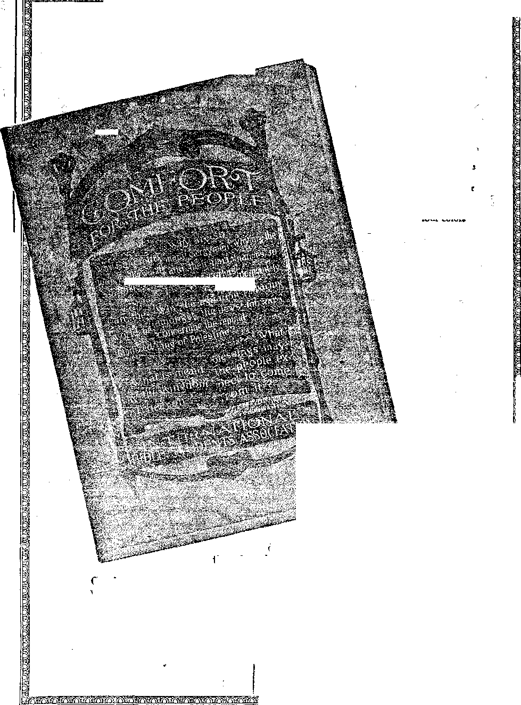

HERE AND THERE THROUGHOUT THE WORLD '
SIGNIFICANCE.
OF THE MASS
LOST LANDS AND PEOPLES
WHO IS
YOUR GOD?
■ a copy —- IBOjLX'eaT
OLD n
WORLD
DYING
Vol VII Bi-Weekly No. 161
November 18, 1925
NEV von to [B EGINNING
WU----------=^z==a=z=^uie^»x=..........-■■ --a.-----------a.j===W
Drastic Economy, a Hindrance to Pbouress
Youth is the Symbol 'of Palestine ............ 112
Items from our Glasgow Correspondent .....
Finance—Commerce— Transportation
Three Billions in Automobiles ....
Railroads Buying Truck and Bus Lines
The Periodic Coal Strike ................ 116
Political—Domestic and Foreign
Palestine Twenty Years Hence ...
- Science and Invention
Bats as Mosquito Destroyers......... ....
Adrenal Glands—Human Chemical Laboratory . , . .
Great Britain to America in Twelve Hours ........ 113
Travel and Miscellany
Great Estates of Spanish America .......... .
Vienna a City of Violence ....
Religion and Philosophy
Soins Questions fob the Evangelist .
SIGNIFICANCE OF THE MASS ............... 118
The Mass an Unholy Institution ............ 120
Jews Rebuilding Palestine ............... 125
Studies in “The Harp of God” . . , . .. .... 12?
Published every other Wednesday at 18 Concord Street, Brooklyn, N.Y„ U.S.A., by WOODWORTH, HUDGINCS & MARTIN
Copartners and Proprietors Address: IS Concord Streets Brooklyn, N. T., U.S.A.
SLAYTON J. WOODWORTH . . . Editor ROBERT J. MARTIN . Business Manssei W JI. F. HUDGINGS . . Sec’y and Trees.
KVB Casts A Corr—51.00 A Ykab Make Bbmittaxceb to TEB GOLDBE AM
Foreign Offices : British ..... 34 Craven Terrace, Lancaster Gate, London W. S Canadian.....«... S8-40 Irwin Avenue, Toronto, Gntari®
Au»tr»l«»la>» 405 Collins Street, Melbourne, Australia
South African......6 Lells Street, Cape Town, South Africa
Jtatared as second-class matter at Brooklyn, N. Y., under ths Aet oi March 3t 187a
Volume VII Brooklyn, N.Y., Wednesday, November 18, 1925 Number 151
[Radiocast, with other items, from Watchtower WBBR on a wave length of 272.6 meters, by the Editor]
World’s Largest Office Building
HE world’s largest office building is under construction adjoining the Grand Central railway station in New York City. The structure, seven stories underground, will cost four million dollars and will be principally used as a locomotive repair shop for the New York Central. Huge elevators wall take the locomotives up and down.
Jin Heroic Telegrapher
EELING the approach of an attack of acute indigestion, Kavanaugh Jacobs, night telegraph operator of the Pittsburgh and Lake Erie Railroad at Monongahela, threw on the red signals to stop all trains, and a few minutes later was found dead with his hand on the key. He died a hero, his last thought that of the safety of others.
Ohio’s Roadside Crosses
IN A successful effort to make motorists mor® careful the state of Ohio has lined its automobile highways with wffiite crosses to show where motorists have met death. At one curve there are eight crosses; and on three pieces of turnpike totaling 100 miles of road there are seventy-nine crosses to remind drivers of the slim hold the automobilist has on life.
Jewelers and Furriers Become Desperate
HE furriers of New York have suffered so many losses from thieves that they have of themselves organized a special guard of men w7ho can shoot straight. The jewelers are following their lead, but first demand special protection before taking up arms themselves. Armored cars now carry pay-rolls through the streets. Anarchy is all about us.
Deporting the Industrious
ACCORDING to a ruling of the Labor Bureau at Washington any foreign student W’ho wrorks at any kind of useful employment during his vacation season thereby ceases to be a student. Under this ruling several young men from India who came here to obtain an education, to learn our w’ays and absorb our high ideals, have been deported as unfit to remain here until their courses of instruction were finished. '
College Girls in Summer Hotels
THE New’ York Times reports that three hundred and twenty college girls spent their vacations as waitresses in a hundred New England summer hotels. Their average wmges and tips made their earnings amount to $11.50 per week, in addition to food and living quarters. The average duty was eight hours a day and eight persons served at each meal
Chance to Die with Your Boots On
K CCORDING to the Prudential Insurance -£-*■ Company statistics we each have about one chance in twrelve of dying with our boots on. Out of a total of 124,000 deaths among their policy-holders ten thousand w7ere untimely. The automobile, of course, was the greatest factor in these sudden deaths. Howrever, there were also many drownings. .
The Ten Safety Commandments
NEW YORK CITY has issued ten traffic commandments : (1) Cross at the crossings; (2) Do not cross directly behind street cars; (3) Do not cross till traffic stops; (4) Do not cross diagonally; (5) Look both ways when you cross. Motorists must (6) look out for children; (7) give the pedestrian a chance; (8) always drive carefully; (9) ahvays keep brakes in good order; and (10) study and obey the traffic regular tions. j •
©9 5 7 ' ' 77 7 7 ' ' ;
JOO
Indians in Utu York State
v* GOLDEN AGE
The First Airplane Stowaway
LESS than two hundred yekys ago Indians XT" EARS ago we heard of a man who caught roamed freely all over New York state. hold of the netting of a balloon as it was
Now their total lands in the state amount to less than an area two miles each way. On the Long Island reservation there are now but 177 Indians. On a reservation in the northern part of the state are 300 that do not speak the English language. The Indians make good citizens. Most of them work on the roads, and at odd times resort to their old trades of hunting and fishing.
Why Financiers Make Money
THE capital stock of all the banks of all kinds in the United States is two and one-third billions of dollars; their surplus is a like amount, the grand total being slightly less than five billions of dollars. But these same banks have outstanding loans amounting to more than twenty-five billions of dollars; and if the average interest on these loans is only six percent, the annual interest income is one and one-half billions, or over sixty percent on the capital invested.
City Freight Must Go Below
THE cities of London and New York are both discussing means to get the trucks off the streets by building freight subways, far below the levels of the passenger subways, which will connect all the principal freight termini with the largest freight-producing and freight-receiving points. It is stated that New York City receives annually 140,000 freight cars of food, which would be enough to make a solid train with the engine in Denver and the caboose in New York. All this food is now trucked through the city^s streets.
A Study of the Suicide Problem
THE New York Times contains an interesting study of the suicide problem. Four men commit suicide to one woman. The Pacific Coast states hold the highest record for suicides in the United States, and Massachusetts the smallest. Education frequently promotes suicide, but ill health is the principal cause of self-destruction. Germany has the highest suicide rate of any country; then come France, Denmark and the United States. Negroes are almost immune. Fear is a great deterrent. : rising and had a free ride into the air. Now we learn of a young tramp who hid in the wings of an airplane just as it was rising from Las Vegas, Nevada, and rode three hundred miles to Los Angeles. The wind whipped his shirt to ribbons, but he made the trip safely.
Three Billions in Automobiles
SOME idea of the size of the automobile industry may be gathered from the fact that the wholesale value of the cars produced in this country in 1924 was a little over three billions of dollars, or a little over a thousand dollars for the average car. There are now sixty thousand buses in operation here, of which twenty thousand are operated by schools.
The Banner Bug State
FOR purposes of experimentation on its pest farm at Vienna, Virginia, the Department of Agriculture recently offered to buy bedbugs at a cent and a half apiece. Every state responded generously, but the Department claims that North Carolina furnished the biggest and the hardest-biting bugs. Hurrah for North Carolina i
Plan for Saving Niagara
fTUIE remedy proposed for saving Niagara
Falls is to erect an obstruction in the river at some suitable point above the V-shaped notch through which so much of the water is flowing. This will spread the water out to the wings, where the rocks are harder and the erosion is negligible. The plan has been adopted successfully to preserve waterfalls elsewhere.
Two Causes of Mail Delays
ONE fruitful cause of mail delays is where mail is addressed to a person who lives at the corner of tWTo or more streets. Sometimes as many as four postal routes meet at a street intersection and it takes time to find the proper carrier. Another difficulty arises where mail is addressed to a large office or apartment building; and not infrequently there are two, three or more persons of the same name among the thousands of tenants.
Railroads Buying Truck and Bus Lines Important Discoveries in Plant Life 3
AT LEAST three railroads, the Pennsylvania, the Boston and Maine, and the Great Northern, have adopted the policy of buying bus and truck lines as feeders. The Pennsylvania is said to have at least a thousand miles of truck lines hauling local freight. In addition, at certain railroad termini, the package freight is now exchanged by trucks, the railroads having found it cheaper to do this than to move the cars.
Boy Rangers of America
THE Boy Rangers of America is a new organization, intended for boys from eight to twelve years of age. It is intended as an auxiliary for the Boy Scouts. It is said that there are already 10,000 Boy Rangers in the country, with lodges in forty-two states, and identified with some fifteen denominational groups. Boys from one to eight years of age and those still on the bottle have not yet been organized into any group of prospective fighters.
Report on the Oil Supply
THE American Petroleum Institute has issued a three-hundred-page report on the oil supply in which conclusions are reached that there is no imminent danger of the exhaustion of petroleum reserves in America, because of better methods of reaching the deeper deposits, increased supplies from countries to the south, better methods of refining and the ultimate use of almost unlimited oil shales, coal and lignites from which oil may be extracted.
Bats as Mosquito Destroyers .
THE mosquito is one of the worst enemies of man. The bat is the deadly foe of the mosquito. The Manufacturers' Record reports that Dr. Charles A. R. Campbell of San Antonio, Texas, has devised a scientific bat-roost which is automatically adopted by bats as a permanent home and is self-sustaining, as one roost filled with bats will create annually four hundred dollars worth of guano. The suggestion is made that the installation of these bat-roosts twenty or thirty miles apart in any mosquito-infested country means the end of the mosquitos. On account of wet weather mosquitos have been unusually pestiferous in New Jersey and about New York City this past season.
TV ONDERFULLY important discoveries are V » now being made in plant life. In Virginia it is so certain that cedar trees harbor and develop natural enemies of the apple that the law requires the destruction of all cedars within two miles of any apple orchard. On the same principle the barberry is an enemy in wheat lands, the black currant in white pine regions, and the common rosebush in potato belts.
New York’s Water Supply
NEW YORK’S water supply comes from the
Ashokan reservoir, located in the Catskill mountains, six hundred feet above sea level, on the opposite side of the Hudson river. The water comes to New York through circular tunnels fifteen feet in diameter, and is delivered into the mains from as far as 750 feet below the street surface in some sections of the city. The water is excellent, always clear and always cool. ■
Wild Life Reservation in Mississippi Valley
THE government is now taking steps to create in the upper part of the Mississippi valley, between Wisconsin and Minnesota, a reservation for wild birds and wild animals which will be about three hundred miles long and in some places five miles wide. The bluffs of the Mississippi throughout this district rise precipitously for hundreds of feet. The .district between these bluffs is often overflowed and, while useless for farming purposes, is ideal as a resort for game. Hunting and fishing will be allowed under regulations.
Proof that the Dead are Dead
PROOF that the dead are dead comes from
Los Angeles. The Evening Herald cites the case of William Bethurum, seventy-two years of age, 1411 East 52 street, that city. William had done something naughty and was in jail. After five days his relatives secured bail for him, and the shock killed him. The prison physicians pronounced him dead, and he was dead. A local physician, Doctor Blank, called in to sign the death certificate, administered adrenalin; and William came back to life. He said that dying is easy, but the coming back t-<j life made him feel very sick. He runs a restaa-* rant, and has gone back to his work'
To Guard Canadian Border Sweden’s Perpetual Lumber Company
A MIXED commission of Canadian and American officials is now studying the question of how to prevent smuggling along the three-thousand-mile border between the two countries. One suggestion calls for the cutting of all the trees in a strip three miles wide at the border.
Morgan Banking House Loans
DURING the last year Morgan and Company have loaned France one hundred million dollars, the Bank of England one hundred million, Australia seventy-five million, Italy fifty million, besides large loans to Germany and other countries. Gradually the whole world is coming more and more under the control of this great banking house.
Mexico City Six Hundred Years Old
IN NOVEMBER of this year Mexico City expects to entertain two hundred thousand visitors per day. At that time it will celebrate by an International Fair the six-hundredth anniversary of the founding of the city. The present population is about 700,000. Mexico City is considered one of the most beautiful and up-to-date cities in the world.
75,000 Jewish Farmers
ONE striking phenomenon of our day is the return of the Jewish people to agriculture.
For centuries the Jews have been landless, confined to the ghettos, where they have been forced to become traders and garment makers. A few years ago there were almost no Jewish farmers in the United States; now there are 1,000,000 acres being worked by Jews, and a total Jewish farm population in America of over 75,000. : .
Malolo, Princess of the Pacific ' ’
THE new princess of the Pacific Ocean will be the steamship Malolo, the new 582 foot, 22,000 ton greyhound, which is now being built at Cramp’s shipyard, at a cost at $6,500,000; and in the spring of 1927 it will be put to work between San Francisco and Honolulu. This boat is expected to travel at the rate of twenty-five miles an hour and to make the round trip in one week, which is about half the time required by the boats now,on; the route. , ;
SWEDEN has a lumber company that has been in business seven hundred years, and its forests today are in better shape than ever. The same land is cut over once in every seventy or eighty years. There is no waste land. It is continually productive.
Germany Drinking Much Less
rpiIE New York Times furnishes interesting -*• statistics showing that the Germans are drinking much less than formerly. In 1900 the annual consumption of beer was 124.6 quarts per capita; in 1924 it was only 63.4 quarts. At the earlier-date the consumption of brandy was 6.5. quarts per capita, while in 1924 it was only a little over half a quart. ..
Why the Marines are in Haiti ’
rpiJE commander of the United States marines J- in Haiti, Brigadier General Fuller, in an interview in the ■ New York Times made the statement that “the marines are not in Haiti on any general mission of sanitation or civilization. We are simply there to prevent the overthrow of the regularly constituted government.” A prominent bank in New York City has loaned money to said regularly constituted government.
Chileans Showing a Bad Spirit
CHILEANS are showing a bad spirit toward the Tacna-Arica Plebiscite Board, which is trying to decide whether the Tacna-Arica province shall be returned to Peru or retained by Chile. The Chileans are attacking Peruvian members of the boundary delegation, and subjecting them to inconveniences and annoyances by searches and seizures of papers from subordinates.
Great Increase of 'Washing Machines '
DURING the year 1914 there were only 50,-
000 washing machines in use in the United States. Today there are four million, and those in touch with the business claim that by 1929 the number will be double what it now is. Approximately one-half of the homes in the United States are now wired for electricity. There are washing machines in thirty percent of those thus wired, vacuum cleaners in forty-four percent, and electric irons in seventy-five percent.; .
AU Over Europe in Three Days
HP WO French aviators on a given Monday HP ESTIMONY, supposed to be kept secret, bul morning breakfasted in Paris, lunched in -®- published in a leading Hungarian paper,
Belgrade, and dined in Constantinople. The next day they spent the night at Moscow, and the following day lunched in Copenhagen, and dined in Paris. The third day's flying, which began at 3.30 a. m- and ended at 9:15 p. m., included one hours stop at Warsaw enroute to Copenhagen.
Great Estates of Spanish America
SEVEN percent of the population of Chile own all the agricultural lands; the holdings of 513 proprietors average 12,000 acres each. In the Argentine there are not less than 12,000 proprietors who have estates of 12,000 acres or more; at least one of them has 500,000 acres. In Mexico fifteen years ago 7,000 families owned all the tillable land. The estates averaged 64,000 acres. One of them, the Terrazas estate, -was larger than Holland and Belgium together, and there was one still larger in Yucatan.
End of the Stinnes Combine
etc. But the liquidation has come; Stinnes is • is so bound together that one injustice any
HAT goes up must come down, on your ’ » head or on the ground,” runs a child’s adage. It seems to be true of the Stinnes combine. Two or three years ago Hugo Stinnes was considered one of the wealthiest and most powerful of men. The inflation of the German mark made him the nominal owner of colossal enterprises, coal mines, iron foundries, factories, paper mills, newspapers, shipping lines, hotels, dead; his interests are in the hands of receivers, and little remains but debts.
New York University College Cruise
AT AN early date New York University will inaugurate its college cruise when the steamship Mount Clay sails out of New York to visit Cuba, Panama, Hawaii, Japan, Korea, China, the Philippines, Borneo, Java, the Malay peninsula, Sumatra, Burma, India, Ceylon, Arabia, Egypt, Palestine, Turkey, Greece, Italy, Africa, Spain, Portugal, France, Belgium, Holland, Germany, Denmark, Scandinavia and the British Isles. The vessel -will carry a full quota of instructors and executives and several hundred students who will study, recite and take examinations as they go around the world.
GOLDEN AGE
Murder Will Out, but Horthy Remains
discloses that it was Admiral Horthy himself who ordered the murder of the two editors of Hungary’s leading socialist paper at the time when he seized control of the country. The paper which published the testimony was confiscated, but the cat is out of the bag.
Britain’s Jails Closing
DURING the year 1914 there were 167,000 persons sentenced to imprisonment in the jails and penitentiaries of England and Wales; in the year 1924 the number thus sentenced was 58,216 or only about one-third of the number of ten years previous. As a consequence twenty of the sixty prisons have been closed. In that same time the jails and prisons in America have tremendously increased in prison population.
One Reason for Unemployment in Lancashire
ONE reason for unemployment in England’s textile centers is seen in a dispatch from Shanghai. It is not a long dispatch. It merely tells that a ten-year-old boy is in one of the hospitals there because he lost his balance from weakness and fell into the machinery at four a. m., after he had been working eleven and one-half hours without food. The British government will not allow such conditions in England; so the owners moved the plants to Shanghai. Common sense dictates fair treatment of employes in every corner of the globe. Humanity where leads to another injustice elsewhere.
Vienna a City of Violence
VIENNA is getting to have and to deserve the reputation of a city of violence from which it is good to stay away. For Vienna this is one of the worst possible advertisements, as she really needs the money that tourists and conventioners bring. But is it likely that the Zionists will wish to return to Vienna after the treatment they received there in August? Vienna is the city which only two years ago staged a riot against Judge Rutherford. The city seems to harbor thousands of young men who are worthless and reprobate, bent on mischief. A majority of the 273 rioters against the Zionists are said to have been state officials.
France*s War Scars Well Healed
THE large section of France ruined by the
German invasion is now virtually back to normal. Barbed wire entanglei tents have been removed, trenches have been filled, the ground has been leveled, and demolished buildings rebuilt. But the sears on the hearts of the widows and orphans will remain for many a year.
Prague’s Monument to Huss ":v
THE city of Prague, Czecho-Slovakia, has honored the memory of John Huss, the reformer, by erecting an imposing monument to him in the principal square of the city. Huss went to the stake for declaring that the worship of Mary is idolatry, that no one can prove that sinners will suffer everlasting fire, and that Jesus Christ and not the pope is the Head of the church. The erection of the monument so angered the papal delegate to Czecho-Slovakia that he pulled out and beat it back to Rome.
Prosperity in New Zealand
THERE is prosperity in New Zealand. The finances of the country are in splendid condition, the surplus for the past year being over a million pounds. Interesting items in the budget are old-age pensions, pensions for the blind, allowances for widows and children, exemption of death duties* on life insurance policies for one thousand pounds or less, and loans for settlers. Nevertheless, there is some unemployment in New Zealand.
Is South Africa Safe for Whites?
A NEWSPAPER correspondent in South
Africa with the Prince of Wales reports that old tribal jealousies among the Negroes are disappearing and that the Negroes are coming to feel that the -whites' are'their foes. They now have a saying that.“when the white man first came to South Africa we had the land and he had the Bible; now he has the land and we have the Bible”. The natives outnumber the whites five to one, but by the arm of force are held firmly in the position of hewers of wood and drawers of water, owning only eight percent of the land. There are natives in West Africa, some of them educated in America, so the writer claims, who brag that it will be their function to supply leadership when the timfe for struggle comes.
Important New Railway in the Balkans
A N IMPORTANT new railway line has just been completed in the Balkans. It connects the Adriatic port of Spalato with the railway town of Zagreb, thus giving the Serbians a new and valuable outlet for their products, as well as another important through line from Prague, Belgrade and Vienna to the Adriatic Sea.
Conditions Improving in Russia
THE New York Times reports conditions in Russia much improved over 1924. There are comfortable sleeping and dining cars on the through express trains, which now make the trip from Moscow to the Crimea in thirty-six hours. There is a rush of Jews back to the land. The Soviet government is encouraging the use of tractors and provides seed, gasoline and lumber for agricultural homes at reduced rates.
Pagan Ferocity in Egypt '
A WRITER in the London Daily Herald, referring to the punishment meted out to the assassins who slew the late Sirdar, Sir Lee Stack, said:
That such a crime merits exemplary punishment goes without saying; but I cannot help feeling that the mass execution of eight men, some of them very young, for the killing of one, in addition to the exaction of five hundred thousand pounds from the Egyptian tax-payers, has about it tire air of pagan ferocity and seriously injures the prospects of any real settlement of the Eastern question.
Europe’s Tremendous Migrations
EUROPE is undergoing the greatest series of migrations ever known in history. Practically every country is expelling those not of the same blood and speaking the same tongue. The result is much like what would happen in the United States if all persons now in New York state who were not born there were told to get out, and the same rule were to he followed in every state in the Union. But in Europe it is worse; for hundreds of thousands of Greeks were expelled from Asiatic territory in which their ancestors lived 1000 B. C. Similar movements have taken place in a dozen countries, Germany, Poland, Bulgaria, Serbia, Esr thonia, Latvia, Lithuania, Armenia, Hungary, Rumania, Albania, Czechoslovakia. These migrations are causing great bitterness and a thirst for revenge all around.
Siberia’s New Gold Fields
TF YOU are in search of adventure and will-■*- ing to pay the price for it, you can probably get all you want by going to Siberia’s new gold fields, some three hundred miles from the nearest railway station, away off to the northeast of Irkutsk. In the winter time the district is the coldest on earth. Food is brought in by airplanes, canoes and sledges. The Soviet takes a goodly share of the gold found, but thousands are rushing in and some of them are coming away wealthy.
Women Coal Miners in India
obert Smillie, Member of Parliament, in a recent address at Keswick, England, said:
In India coal is being developed with British money, a large amount of which is invested by British coal owners; and there women and children are working under the same conditions that existed in Britain eighty, ninety or a hundred years ago. The little children are carried into the Indian mines; and they and their mothers work for twopence and threepence a day and for ten hours a day, underground.
“All Men in Expectation”
TRAVELERS returning from Jerusalem are reported by the Cumberland Evening Times as saying:
There is the expectation that something will happen. Such a city of optimists could not be found elsewhere, it. seems to me, save in a new oil town in America. Everybody is looking forward to something. Nobody seems to know exactly what it is, but they are certain that it is to be very wonderful when it comes. Will the wonder come, and what will it be? Is it the same old .Messianic hope? And will the dream be fulfilled? A world that venerates Jerusalem may well wonder.
Palestine Twenty Years Hence -
IN AN address to the Zionist congress at
Vienna, the head of the Labor and Immigration Department of the Zionist executive made the prediction that within twenty years from now Palestine will have a Jewish population of two million. There is no unemployment in the country, and the situation is improving by leaps and bounds. All this is the hand of God. These are the very conditions declared by the Lord to be one of the proofs of His presence in the earth, preparatory to the establishment of His kingdom world-wide and with all power.
Locusts Killed by Airplane
THE locust has met his Waterloo. The air* plane is too much for him. The Soviet government has found that sprinkling the ground with poison from an airplane puts the finish on the locust for good and all. The hand of God is plainly visible in all this. But for the World War it is doubtful whether this means of ridding the earth of pests would ever have been discovered.
Palestine’s Jewish Population Doubled
IN FOUR years the Jewish population of Palestine has doubled, and it now stands at 115,151. At the end of the World War it was only 57,000. The soil is limestone, therefore very hot and permanently fertile. When properly developed it will support many millions of people. Palestine now has the best roads in the Near East, and its finances are in a better condition than at any time since the days of Christ. Malaria has been subdued. Schools of forestry and agriculture have been established. Where there were only barren sand dunes five years ago there is now a flourishing city of 30,000 inhabitants, Tel Aviv.
“Read of All Men” By H, M. Warman
A CUSTOMER of mine told me that the police recently made a raid for booze at the place where he rooms. While they were at it they searched his room also, and found some of Pastor Russell’s works. Afterwards he saw one of the police officer who had taken a part in the raid and this officer told the roomer that as soon as they came across those books they concluded that it would be useless to go any further with their search for liquor. Suffice to say that the police did not tarry long at the house after the Bible Students literature was discovered.
Phoenix Street-Cars
By W. E. Brokaw, Editor The Eqwitist
THE statement in the The Golden Age, issue of July 1, page 613, about street-cars in Phoenix, Ariz., having been adandoned for bus lines is not quite accurate. At the City Manager’s office I was told that the street-car company is to cease operating the 15th of October, but that it is not yet known just what will be done after that. A variety of schemes have been suggested and are being discussed.
Two Pictures (Contributed^
THE first picture is of a poor woman scrub-bing the hallway of a great modern office building. For this service, which is a great task for her, she is paid one dollar and fifty cents |jer evening. She has three children whom she is trying to keep in school long enough to be of some help. Her husband is a hopeless invalid and cannot even feed himself. Let us look at her. She has large beautiful eyes, but they are encircled with dark rings; her complexion is sallow and she looks weary beyond description. She is stooped and her small hands but infirmly hold the mop as she swings it back and forth.
The ‘‘boss” of the building appears; he has a perpetual leer. He stops and tells the woman that she had better do a little better job or else her job will be given to another. He adds that there are plenty more who want work and there will be no trouble to get them. Now she enters one of the offices where there is a great amount of work to do. Everything is helter-skelter and she must rid up. This job has but recently been added to her regular round of duties in addition to her work in the hall, with no increase in pay.
With a deep sigh, now that her “boss” has gone, she enters in upon the task. Just a little care on the part of the occupant of the office would have greatly lessened the woman’s work. But he has been sitting there, feet higher than his head, all day long, making money by his wits and tossing things right and left as he smoked the best cigars. The woman’s lips are set firm; they do not move; but in her heart is the question : “O Lord, how long?”
The second picture is at the home of the wife of the man who lolls so comfortably in his office, tossing things right and left as he so comfortably counts up his easily made money. She is giving an afternoon tea during which will be a rendition of musical selections and readings. This lady is a specialist in giving cute child recitations, although she weighs nearly two* hundred pounds and is unbecomingly fat.
The guests now begin to arrive and a colored maid takes charge of the wraps. They are of the best there is, many of them costing thousands of dollars. The program begins. Silly little songs are sung by women with mediocre voices, and soon they become the recipients of many false compliments.
Now the hostess rises. She is going to “do” one of those child recitations. She gently' swings her two-hundred-pound frame into the middle of the floor amid tremendous applause and a wild flutter of excitement. Someone says, “Oh, she does those little things so dear.” Now she begins and she smirks and sways from side to side shyly and says, “I know where the violets grow,” etc., in a lisping, childish voice. The roof almost comes down with applause after she finishes. You know her favor is worth having; for she is a great lady, financially speaking, and that is all that counts now-a-days.
I know that some who read this •wall say: “Just some wretched. bolshevik, who always wants to change everything, has written this.” Someone else will say that it is a mean picture of conditions that do not exist and was only written to stir up bitterness. But is it a false picture ? I do not think so. These same befurred women will go to church and sing: “He rules the world with truth and grace,” according to a certain hymn much in use. I wonder whether they ever compare conditions that now exist in the world with such a statement about God, and if so whether they do not come to doubt the accuracy of that statement. Thy kingdom come |
GREAT strides are being made by archeologists in their efforts to unearth the past and to dispel the mists of antiquity; and with each new discovery in this interesting field comes further confirmation of the Bible narrative.
The Washington Post, in a recent editorial concerning Dr. Thomas Gann, the eminent archeologist who discovered the famous Lost City of Maya, m British Honduras, made the following interesting comments:
He is one of many explorers who are penetrating the still untrodden places of the earth in search of the secrets of cities and civilizations which will throw new light on the history of the earth.
The discovery last year by Oapt. Angus Buchanan, the leader of the Lord Bothschild expedition, of a city built of salt in the heart of the Sahara has, for instance, given a new impulse to the investigation of the vast uncharted areas of western and central Asia, of Arabia, Tibet, China and Indo-China, of New Guinea and of Africa.
There are still in the Antarctic five million square miles of untraversed land; the Kola peninsula, in Arctic Lapland, awaits the pioneer, and there are two million square miles of South America which may yield priceless discoveries.
In the heart of China there has been found a race of blonde 'women with yellow curly hair, descendants of a people whose very name lias been lost; while in the Becker-Nihon islands of the Hawaiian group, among the ruins of an unknown city built in stately terraces, there has been found a colony whose men are Apollos and whose women are of extraordinary beauty.
In the Isthmus of Panama, beyond the Darien mountains, Mr. Mitchell-Hedges found a mysterious race of Indians with pure Mongolian features, living among ■prehistoric animals. In the same region was found a race of white Indians settled among the ruins of a great citv which flourished 5,000 years ago.
■ A race of white savages has been found in the Vnyam-. wezi country, in tha heart of Africa, while in the hills to the north of the Mekliong valley, in Indo-China, is a silent tribe, which has no deity, worships no idols and has a language which consists only of five simple sounds.
In the Panama jungle travelers have found the perfectly preserved mummy of a girl whose hands and feet bore claws like those of some weird bird. These and ether relics point to the existence in that region in past ages of a race of human tree-dwellers.
This record embraces only a few of tha discoveries of recent years, but while such rewards await the traveler, who can wonder that in these prosaic days the hire of exploration still maintains its hold ?
No Overcrowding of Earth
HE above confirms the prophecy concerning the new age we are entering, that all the secret things would be brought to light. “There is nothing hid which shall not be made manifest,” are the words of Jesus on this point. And in the light of such discoveries as the above, we see that this applies just as truly to the buried cities of the past as to the moral conduct of men and nations. Those who think the earth is in danger of becoming overcrowded now or in the Millennium can soon allay their fears by considering the fourth paragraph of this editorial, which declares that there are “five million square miles of untraversed land” in the Antarctic, and two million in South America as yet unexplored, besides the Kola peninsula, which still await the ax, pick' and shovel of the pioneer. And. if all the people who ever lived on the planet could find plenty of “standing room” in the Lone Star State, even on the basis of a very liberal estimate, allowing more generations to a century than the known average, most’ assuredly the contention of such is proven groundless.
Of course, we can befuddle our intellects with false reasoning and by juggling statistics, and still be unable to comprehend the truth with reference to this subject; but sanity and plain, ordinary “horse sense” will impel us to accept gladly such an easily demonstrable fact. Many who cannot see the mountain peaks of truth, towering before them in all their simple grandeur, have no difficulty in seeing (?) with great clearness of vision the mole-hills of superstition, creedal ignorance, and “science, falsely so-called”.
The feel can readily understand and will quickly acknowledge that the crudest mechanical contrivance possible of production had a maker, that it was designed by somebody capable of thought and possessed of intelligence, but the poor thing is silenced -when the marvelous mechanism of the Universe, with literally billions of complicated and delicately balanced and adjusted parts, looms up before him in all its appalling magnificence I And in reply to the query, Has it a Maker, a Designer? he shakes las head, or says: “I do not know”I
Refutation of Darwinism
HE “blonde women of China”, the “stately terraces” of the “unknown city”, and the “Apollo-like men and women ... of extraordinary beauty” found among its ruins, referred to in the fifth paragraph, all belie the Darwinian hypothesis of an evolutionary origin of mankind. “The mysterious race of Indians with pure Mongolian features, living among prehistoric animals,” and the “race of white Indians” found in the Isthmus of Panama, living among the ruins of an ancient city, and the “white savages” of the Unyamwezi, all bear testimony to the falsity of Darwinism. The mummified freak' with claws “like those of some weird bird” confirms the Bible utterances concerning the fall of man and his tendency to become more brutelike and to gravitate to the level of the lower animals.
‘ Possibly Satan has to do with the production of freakish deviations from the normal human form and appearance, for the purpose of deluding humanity into believing and accepting his “Gospel of Dirt”, as Carlyle termed the evolution theory. King Nebuchadnezzar’s degradation to the level of a beast of the field, also confirms the foregoing, and shows us that humanity’s tendency is downward, and not upward.
We may be sure that when the kingdom of truth and righteousness is established in the world under Christ (Matthew 6:10; Daniel 7: 27), and Satan is bound for a thousand years, then the trend of the human race will be upward.—Acts 3:19-21; Isaiah 35:8-10.
AT PRESENT a well-organized plea for systematic economy seems to be prevalent in all countries, especially in the'United States. At first glance and without due consideration, it would appear that this policy is the only door of relief or hope remaining to mankind for the settlement of the distressing problems of the civilized nations.
A fact worthy of our notice before we proceed further is that the most ardent advocators of economy in our fair land do not offer to reduce their salaries in the least. From the Chief Executive, Congress and the House of Representatives down to those who draw up the economy charts for the already struggling masses, all remain quite content to pocket what seems to the man of the street salaries far in excess of the service rendered. No doubt these advisers would plead the cost of maintaining appearances ; but why should millions toil for a mere pittance in constant dread of penury to uphold a system of veneered barbarism and exploitation and its great outward show?
Nor do we find the financiers and business men who so strenuously uphold and defend the economy theory relinquishing any of their so-called “God-ordained rights” as an example. Ah. no! As usual, budgets will be prepared showing the already trodden-down laborer how/ to save twenty cents a day out of the $2.00 he receives; and, as ever, the advisers will give great and costly banquets, send their wives and daughters to seaside resorts in palatial steam yachts, and squander millions on the wheels of fortune in foreign lands or on the ever shifting and deceptive stocks and bonds of Wall Streets all over the land.' And following the regular, firmly entrenched custom, millions will be expended to hold huge naval maneuvers in far-off isles, while the sons of the soil ask for relief and get only a few begrudged crumbs of favor.
Cannot every thinking man see that a policy of economy will halt development, commerce, invention, education, and human progress? And can they not discern that economy also means inefficient service, accidents, and underpaid, uneducated human labor?
What we need is not to cut the wages of the plumber, the carpenter, the bricklayer, and the railway man and to begrudge them the few comforts they get out of life, but to bring even the most underpaid trades up to and above that level without placing a skyrocket under the prices of the needs and necessities of life. And, by the way, let us not forget that though these trades average $5.00 to $12.00 a day they average only seven @r eight months’ work per year and hence, cannot amass the huge fortunes which many would have us believe they can.
The Possibilities Within Reach
ONLY a false standard of government would economize on development, human necessity, as well as human progress. Let us consider a few things which, if they were developed, would feed, warm, and supply comforts to the now longing masses often stinted of life’s necessities by a system of frugality where consideration of man’s need and comfort are concerned.
First of all there is the great Colorado river, from which could be developed power, heat, and light to ease the burdens of and give comforts to many. And not only these, but also millions of acres of dry, fertile, desert sands could receive the life-giving waters and as a result provide luxuriant abundance of grains, fruits, vegetables, etc., as well as a place where thousands of the dwellers in our overcrowded, reeking slums could establish comfortable, delightful homes in the midst of plenty.
Second, let ns cast our glance to those great undeveloped areas of natural resources adjacent to our highways of travel and the still greater areas where only a few brave explorers and pioneers have gone.
A little farther off we perceive Alaska, lying 'dormant with its millions and millions in undeveloped mineral, coal, and petroleum wealth, and with its broad, extensive tundras on which huge herds of reindeer and musk-ox could be raised by the millions for meat, hides and even dairy products.
Then skip to the undeveloped, unexplored, fertile tropical isles of the Pacific on which so little human care and effort is now expended, yet which, if efficiently subdued and cultivated, could produce shiploads of delicacies for many hungering palates.
Next consider what great good would result to commerce if a few of the millions so freely spent on war were diverted to the purpose of cutting through the St. Lawrence river-bed so as to permit Atlantic ocean-liners to come up to Detroit, Chicago, and Duluth.
Direct your mind now to.the Avoeful lack of good roads in this enlightened land, which could easily be remedied by the unselfish use for the good of our neighbors of the abundant natural resources, efficient labor-saving machinery, and the man-power now lying idle in our cities.
Then a great reforestation progTam is necessary to restore that which greedy corporations and individuals have like vandals stripped with little thought for the men of tomorrow.
As with our forests, so with the fish and the game have the civilized vandals wreaked their destruction wholesale. It is true that our government has put forth some noble efforts to check the ruthless waste and restore that which those of the past so wantonly destroyed, yet how much greater should be the effort expended I
The inventors and the greatest benefactors to our race must starve and shiver their uphill way to a pauper’s grave, in many cases, while others reap the millions resulting from the child of their brain. Must we economize at one end of the scale alone while checking creative invention and effort as a result of a policy of thrift ?
Advantages of Aircraft Expansion
THEN there is that great field of commercial aircraft to expand. How easy it would be in time of flood, famine, pestilence, or other distress to rush airplanes to the scenes with the needed food, medicines, and relief! But, no I Christians (?) are too much occupied in making the world safe for democracy with poison gas, disease and blight bombs, liquid fire, etc., to do anything so useful and Christlike I
Education: How broad are the opportunities not to scrimp and save, but to expend more on constructive, technical education to fit our younger generation to meet skilfully and efficiently the demands of life! Shame on the nation that would take liberty and enlightenment as its motto, and then report through its census millions of illiterate or semi-educated citizens! Let us utilize our now deadly ships of war to take our youth to other lands on educational tours and thus bring men into a closer union and, as a result, deal narrow, cramped patriotism a death blow.
It is folly to curse our bountiful Creator when a famine occurs, while there are millions of acres in the Amazon Valley, the jungle, and on the Nile that could be conquered and made to produce abundance for all if efficiently distributed. The plague-infested swamps from which rise hordes of disease-carrying pests—why not let science eliminate both the swamps and the insects, as was proved to be practicable in Panama and many other places?
Space will not permit more than a brief review of a few of the countless tasks which humanity could profitably make into useful agents for man’s common welfare. There are huge irrigation projects, such as that of the Sahara desert by artesian wells; the cutting of many canals to connect useful waterways; radio programs from powerful stations in an international language; the gathering of power from the winds, the tides, the rivers, and even from the subterranean heat of volcanoes; the planting and efficient cultivation of millions of acres of now idle lands; the education of the peons, slaves, both the literal and the wage variety, and the masses of foreign lands as well as the uneducated of our own domain; and lastly a most-needed reform, the replacing of the disease breeding slum tenements with pretty stucco cottages.
Just Distribution Would Bring Prosperity
THESE are not Utopian dreams, but the practicabilities of today, although we fully realize that until the full establishment of Christ’s kingdom the selfishness in all classes of men will prevent much of this being done, if not all.
Let no one hastily cry: “But if these things were developed ihere would be overabundance!” Ah, no! there might be under the present selfish, brutal law of “supply and demand”, but under a just system of distribution humanity’s needs would use up many times what is now produced.
Rather we would not see men and women with pinched, starved, longing faces gazing wistfully at the things which, behind plate-glass windows, their undernourished stomachs so pitifully crave; nor would men long for the juicy steaks so temptingly displayed while knowing that their portion is a soup-bone. And then, there are the neat though not extravagant clothes which so many would like to have in place of patched, ragged overalls, etc. Nor would many shiver under thin rags while tons of coal and millions of unharnessed water-power go to waste, or lie dormant. Nor would men and women in the sweat-shops of our slums and cities long for a chance to till the . vacant fields and valleys, held by grabbing land-barons, while now even the sunlight rarely se ds its purifying rays upon their filthy conditions and surroundings.
Ah! what vistas of comfort (and remember, comfort is far from the “fullness of bread” and vice of Sodom) we can vision; and these would not come as a result of thrift or economy but from free, open-handed, intelligent development of nature’s abundant resources, which when produced would not be wastefully left to rot on the fields as at present, but efficiently distributed where most needed.
We hear of the “overabundance” in California. What a mockery, when one sees hundreds and hundreds in its large cities standing in line for a sandwich only! And then think of the multitudes that are too proud to ask for relief but grub along on the very verge of starvation.
How far away relief seems to the despairing masses led from one false hope to another by their unfaithful leaders who are in the pay of the oppressor! But lift up your heads and rejoice, ye sorrowing of earth; for the time of deliverance is at hand, and just beyond the storm now hovering overhead, lie far greater glories than we can now conceive or imagine, under the righteous rule of Him who has promised to “break in pieces the oppressor” and to bring back to the misled masses their long usurped rights. Rejoice; for the time is at hand!
I SEE by the papers that certain natives of
Africa were not pleased because they were not allowed to dance till they died, to give pleasure to the Prince of Wales.
They have similar customs among the Mexican Indians. I witnessed such a dance in 1906, in Zacatecas. I went with Mexican friends, a three days’ journey, in a coach of six horses, through great cactus forests and through the Rio Grande, out to a fine sheep ranch, or “hacienda”, in the wildest place . imaginable. Here we saw a large snake basking in the sunshine, and went out of the Avay to avoid it.
We then went to a small Indian village to see the natives celebrate the feast of the Holy Cross. The procession was ready to start when we arrived. Four Indians carried a large cross on their shoulders. Behind them four women carried a smaller one. Both crosses were decorated with large white flowers made from the interior white leaves of the maguey or century plant. As the procession started, the dance be-
Mrs. Elisabeth D. Whyte
fore the cross began. The dancers were young, some very good-looking. They jumped up and down, whirled around, then for a time the step was 1, 2, 3, 4, 6. .
An old man with a mask and long white beard, whom they called “El Perro” (the dog), carried a whip with which he kept the dancers in line. In the rear several wealthy Mexican “haciendados” (ranchers) danced. They were on horseback. Such beautiful animals! The costumes of the men and the trappings of the horses were heavily decorated with silver. They danced a sort of quadrille, slowly moving gracefully in and out, yet keeping pace with the procession, along the banks of the river. They halted a moment to pass the crosses on to others, and then the same performance continued until Ave returned to the Plaza, where many sought the privilege of carrying the heavy cross up the church steps, on their knees.
In the middle of the Plaza there was a high pole holding up a large globe, from which streamed many bright colored ribbons. The dancers each took hold of one and at a given signal they all started together like living shuttles, and they wove a beautiful design all over the globe; then, reversing the movement, they undid it, releasing a flight of snow-white pigeons that fluttered over our heads and settled on the roof of the- church. While the dancers were weaving the globe they kept perfect time to the music and the dance steins.
It was wonderful; yet those poor natives were' half savages, in spite of the church in their; midst, and were willing to dance till they' dropped. If they were willing to suffer for their eternal torment god, how much more so they will be when they know that God is not a monster, but a God cf wisdom, justice, love and power! The feast was over for us, but the fanatical natives kept on dancing until they were exhausted, and many died.
WHY does the hair on a cat’s back, and the hair on a human head, go straight up, and 'the-flesh turn “goosey5in the presence of fear? Scientists tell us that two little glands the size of a walnut, and located just above the kidneys, are responsible for this.
These glands, known as the adrenal glands, ■shoot forth a chemical into the blood stream which prepares the system for instant combat with outside foes. Adrenalin is the name of the chemical which these glands discharge, and which immediately changes the size of the blood vessels. These glands also affect the liver, whoso function is to store up sugar for instant use in an emergency and at the moment of the chemical discharge the liver pours out at once sufficient of its store to meet the necessity.
Another precaution which the human organism involuntarily takes during times of stress is the instant diminishing of the size of the arteries leading to the stomach, while ‘those leading to the lungs, heart, brain and nerve centers become temporarily larger.
In view of the above facts and certain other blood tests, present-day super (?) education is seeking to identify reasoning man with the lower orders of animals, which are governed by instinct. While the organic principle in man and in lower animals may be similar in many respects, who would dare to assert that reason by a process of logic and deduction is to be found in any other animal than man? Moreover, those of the protoplasmic evolutionary theory, are bare of all hope as respects a future life, whereas the Bible inspires the mind with a resurrection prospect for man, built on a basis of absolute justice through the legal transaction of the cross of Christ.
Further, while these sticklers for godliness in creation swallow their monkey and camel, Holy Writ clears our vision completely by saying that man was made a little lower than the angels, and crowned with glory and honor, and given dominion over the works of God’s hands. Thus the human king fell as per the Genesis record and blurred the image of his Maker to the extent that man does not now wish to retain Jehovah in his knowledge. The average of life has greatly shortened since the Flood also, and at present, is about thirty-five years.
It is apparent that this adrenalin chemical secretion in nature was simply arranged by an All-wise Creator to increase the blood flow in times of distress and has no special bearing upon the matter of instinct. In fact anger and all the human impulses have not only a direct connection with the character status of the person but materially affect the health and physical structure of the organism, even beyond whrl is discernible by the senses.
WE CULL the following remarkable declaration from The Life of Youth, which is a monthly magazine published in Zurich, Switzerland. It shows how even amidst the ranks of Christian youth opposition to the old order is developing, which, together with many other
State By F. Leon Scheerer
factors, is working towards its certain dissolution, and breaking ground for a new and better order of things. The article purports to set forth the attitude of the rising Swiss generation in these words:
We reject the modem state in its threefold aspect, • We disown its claim of being Judicatory. While at one time perhaps the sponsor of uplift and progress, it has, like its legal code, become hardened and the most bitter opponent of every innovation born in its time that tends towards a possible change of established forms.
We deny to the state a rightful claim to public morality. We claim it to be the resultant of the public’s expression of morality and not an expression of the existing state itself.
J We reject it as an organizer of communal life. As protector of the class struggle it stigmatizes its egoistic interests.
This worldly partisan spirit finds expression in the sanctified competitive system.
We renounce state feudalism and base our hope in the community rooted in the Gospels.
L; And we finally reject it as a state of coercion.
P We are compelled to reject the state, because its very Constructive principle is that of force. To might or force of any kind, we deny the claims of morality and : moral worth. To the spirit of our youth the thought 5 of force and of every institution based upon it, is irreConcilable.
The history of the past ten years has robbed us of our last shred of confidence in the modern state. We have seen modern political economy before our very eyes, develop into class rule internally and into nationalism externally.
We direct all our energy against both; for they will culminate in a joint use of the military against the
foe within and for war against the national enemy without. .
The modern state pursues the ideal of material support and spiritual development of its citizenry. But since it actually fails even in this respect, it is our prerogative to challenge it.
The point at issue is not the continuity and maintenance of the state so much as the welfare of the people t and opportunities for an unhampered expansion and ’ intellectual development of their character. But whatever obstructs such moral development must be removed.
We are made to feel that the state as now organized is blocking the path of God’s incoming kingdom.
For this reason we challenge the modern state. We challenge it, even though knowing, yea because of this very knowledge, that youth is recognized by the modem state. This has a double significance. \
We love our country. But we are not misled in our love by the patriotic huzzas of Swiss carnivalists of the type, “From a distance far, we greet thee,” nor by the distress of our people, daily crying their needs more loudly to heaven, nor yet by the preparedness frenzy of our militarists and their followers.
Our love for our country and people is deeply rooted in our hearts, but above our native country and people towers God’s coming kingdom. Strong peoples are needed for its support.
“Brave men who work while others sleep, Who dare while others fly—
They build a nation’s pillars deep And rear them to the sky.”
UNDER the above title the Jewish National Fund Bureau for America, 114 Fifth Ave., New York, publishes a little pamphlet which Contains much that is heart-cheering for a Bible student. The little booklet opens with a suggestive poem by Rudyard Kipling, which we republish herewith, together with the first page of the booklet: •.
I am the land of their fathers, In me the virtue stays,
I will bring back my children After certain days.
Under their feet in the grasses My clinging magic runs.
They shall return as strangers, They shall remain as sons.
■—Rudyard Kipling.
tthe Jewish people is the oldest of the nations; Palestine counts among the earliest lands of civilization. Yet from the reunion of the Jewish people and Palestine has sprung the miracle of a vigorous new youth for both. For the waste places of Palestine are being transformed into fertile fields and luxuriant plantations.
The moribund classic Hebrew has become the living virile national tongue proudly spoken by old and young, and recognized as an official language by the government of Palestine.
The sons and daughters of the Jewish people have become pioneers in Palestine, consecrating their youth to the regeneration of the Jewish Homeland.
The pioneer youth of Palestine, better known by their Hebrew name of Haiuzim, have come in thousands from Germany, Austria, Poland, Russia, Hungary and Ozecho-Slovakia since the end of the World War. Most of them are members of well-to-do Jewish families, and have abandoned comfortable homes, university studies and professional careers for the sake of their Zionist ideals.
:f The ideals of the pioneers are declared to be identical with the promises given through the ancient prophets; plain living, high thinking; a return to the soil under such conditions that there shall be in all Palestine neither gentlemen farmers nor farm laborers; and the universal use of the Hebrew tongue.
Until now, it seems, the acquisition of land in Palestine has been bound up with many legal and social difficulties, and large tracts were not available under any circumstances. But now the situation is extremely favorable, and every Jew who can do so is being urged to contribute $20, which will recover for the Hebrews as a whole a dunam (% acre) of the ancient homeland. To our way of thinking there are blessings for everybody who can and will take an active part in this restoration of God’s typical people to the land promised to them as an everlasting inheritance. The little book closes with the following appeal:
Some young men. and women, will go from America to share in the pioneering achievements of the Haluzim.
But the majority will remain behind, even as a majority of the Jews remained behind when Ezra led a devoted band on the Return from Babylon. Then, those who did not give themselves, gave of their gold and silver. So must we do today. If we do not give our own selves, we must furnish the means for those who do.
Shall we in America eat, drink and be merry while Palestine is yet to be redeemed ? '
Shall we let the pioneers hunger in vain for the soil of Palestine?
Shall we leave the Jewish Homeland without land?
Great Britain to America in Twelve Hours
AMAZING claims as to speed and vertical rising are put forward on behalf of a monoplane of an entirely new type, the plans of which have just been brought to London by a young Austrian aeronautical engineer named Charles Gligorin. The Ministry has offered to build an experimental model on his specifications.
The new monoplane is based on an application of the rotor principle used in the Plettner rotor ship. Among remarkable claims made for the machine are:
It can rise almost vertically up from the ground, like a helicopter.
Its speed is three times greater than the fastest plane of a similar size at present.
Economy would be effected up to thirty-three percent. .
There is nothing “freakish” about the appear-.ance of the new monoplane. It does not depend solely for its power on its rotor, which takes the place of wings. At the axis of the rotor is an ordinary 240 h. p. engine, driving a propeller on the ordinary principle. An average speed of something over 300 miles an hour is claimed, which would bring the American continent within twelve hours of Europe—a dream which would be further realized by its independence of landing fields. One of the problems facing the air traffic experts in the past, has been the loss of time taken in the transportation of passengers from the center of the cities to the outly--ing suburbs. Where it now takes over seven minutes to rise to a height of 1,000 feet, Mr. Gligorin claims that his machine will take only one and one-half minutes.
He also claims that the machine possesses “safety” properties in respect to engine failure, which would materially minimize the risk of flying.
Machinery for Russia
l\/r Rakovsky, Soviet agent, who has re-■1V1.. turned to London, has come prepared to place orders with British firms to the extent of no less than £15,000,000, says the London Daily Herald. Of these some £10,000,000 will be for agricultural and other machinery required as the result of the good harvest that is said to be assured for Russia this year.
Motor Cars in Great Britain
THERE were 1,393,000 motor vehicles licensed in Great Britain on May 31, including 533,000 cars 518,000 cycles
217,000 trade vehicles
92,000 cabs
These figures are given in a return by ths Ministry of Transport, which also shows that in the period December 1, 1924, to May 31,1925, gross receipts for taxes on motor vehicles were £13,002,255.
The Smoke jJvil
DURING a London smoke fog a twelve-year-old child in twenty-four hours breathed 250 miles of smoke particles. Manchester’s smoke deposit exceeds London’s by a great deal. So said Mr. Fletcher Allen, the organizing secretary .of the British Humane Society, addressing Manchester Rotarians. The smoke, he said, practically denied children the right to live.
Century Ago and Now
TpANCY Stephenson’s engine puffing along >*• from Stockton to Darlington as it did a hundred years ago! True, the poor old centenarian with its comic funnel and queer mechanism, had a brand new petrol motor hidden in its “tummy”; grafted into it, so to speak, like a youth-renewing monkey gland—else it could not have made its brave show. Its smoke and steam were counterfeit, but for the rest it was the genuine ancestor of all the world’s locomotives. Imagine, then, the contrast between this venerable machine and the latest triumphs of steam engineering that have followed it.
The eye beholding the first and latest engine can see a hundred years of pregress in science and skill; but the imagination can hardly realize the tremendous consequences of this mechanical development. That first little tin-pot puffer started a change in human relationships and activities second only to the mental and social revolution caused by the invention of printing.
The English towns were on holiday recently, to watch a six miles procession of locomotives and rolling stock of every type, from the old '‘Puffing Billy” and dandy coach to the latest high-speed mammoth and its luxurious carriages (coaches) and dining saloons.
Railway Situation
IN HIS presidential address to the National Union of Railwaymen’s Annual Conference at Southport, Mr. W. Dobbie said that they met in the shadow of great industrial depression, and that the workers were faced with the greatest crisis this generation-had known. As with other industries, so with the railway industry. Whenever employers want to curtail expenses it is always the workers who are called upon to bear the brunt of the burden. He said:
We are always called upon to make sacrifices in the national interests, but we know from bitter experience that the life of a workman and his family is one of continual sacrifice; and I say definitely that the time has arrived when sacrifices must be made by the other class.
So long as there is the desire on the part ef the railway companies to enforce reductions on our members, go long as men are being dismissed 'and throws on the streets, so long as there is a shopman on short time, there can be no justification for railway shareholders receiving seven and a half percent, five percent, or even two and a half percent quarterly dividends.
Continuing, Mr. Dobbie said:
I have given careful consideration to the whole problem with which we are faced, and I can see no reason why our members should sacrifice one iota more-of the conditions we have succeeded in obtaining. Iji my opinion the depression through which the trade of this country is passing does not justify the further lowering of our standard of existence. The statements of the railway companies are a confession of their failure to run. the industry efficiently, and the time has arrived when the industry should be taken over by the State.
Mining Situation '
SPEAKING at Scarborough before 200 delegates, representing 799,312 miners, Mr.
Herbert Smith said;
I am hoping that this attempt on the part of the owners to depress miners’ wages, lengthen hours, etc., will have the full opposition of the whole trade-union movement in Great Britain.
The subcommittee of the Miners’ Federation have worked out plans for an alliance with railwaymen, transport workers, and engineers. These unions have a membership of 3,000,000.
The statement from the miners sets out that the following would be the reductions in the average earnings of the miners if the owners’ proposals are put into effect:
|
Present dally rats |
Proposed reductions £ s d | ||
|
£ s |
d | ||
|
Scotland |
o io |
2 |
/ 0 2 1; |
|
Northumberland |
0 9 |
2 : |
? 0 2 2 i |
|
Durham |
0 9 |
10 |
0 2 0 ; |
|
South W ales |
0 10 |
6ya |
0 1 10 |
|
Eastern Division |
0 10 |
9 , |
0 0 7, |
|
Lancashire , |
0 9 |
6 |
0 0 10 |
|
Kent ; |
' 0 12 |
10 |
0 12 |
The Miners’ Viewpoint 1
rpi-IE miners claim that the owners are to blame for the condition of the industry, because they have never taken the miners into their confidence as provided in Part Two of the Mining Industry Act, 1920, Continuing, Mr. Smith said:
Whether the country believes in nationalization or not, it will be driven to adopt that as the only possible solution to save the mining industry.
At Yorkshire a resolution was recently passed by the miners condemning wars, declaring that the workers were used as pawns in the game, and calling on the Miners’ Federation to give a mandate to the Miners’ International to declare a strike in the mines of the whole world in the event of a situation arising whereby any of the nations might become involved in war. At the time of writing both owners and miners are looking to the government to take action over this resolution. .
A Mammoth Engineering Feat
BY BRINGING the waters of Loch Treig, which lies 16 miles inland and 700 feet above sea-level, down to Loch Linnhe for driving a plant which will supply 100,000 horsepower for refining aluminum-bearing earth, which corresponds in magnitude, for technical reasons, to a 300,000 horse-power station providing electricity to a municipality for lighting, etc., there will be made in the heart of the Western Highlands of Scotland sufficient electricity to supply the wants of three cities the size of Edinburgh.
Speaking to a Sunday Post representative, Mr. Halcrow, the engineer responsible for the designing of the scheme, said:
You can say that it will be the biggest engineering feat attempted in Britain since the Forth Bridge was built. You may also say that the tunnel, when complete, will be the longest in Europe, and will be surpassed in the entire world only by the Shandaken Tunnel in the Rocky Mountains, which, incidentally, is only half the diameter of the proposed Lochaber Tunnel.
Already the main task is being attacked in bringing
the waters of Loch Treig down to i£a fefioTSS o? Loci Linnhe—Ben Nevis lies right in the way—a job requiring the faith that moves mountains. But engineer! do not rely on faith very much; we put our trust iat tunnels instead. Actually the results will be the sama, Ben Nevis will be eliminated, and through its granitai heart will rush a river of water packed with a tremens dous force into a concrete-lined cylindrical tube, fifteen miles long and about sixteen feet in diameter; about half as high again as a London “Tube”, which no one considers small. .
There is a railway twenty-two miles long to be made, already working at three points, and to be finished in October. Camps have to be built—twelve altogether— for the housing of workmen. The largest of these will be on ths bare hillside near Spean Bridge, and will contain canteens, recreation-rooms, and playing fields. In one of the wildest and most barren regions in the whole British Isles these signs of industrial progress must be created before the first drill can bite into the virgin rock of the mountain; and every ounce of material must be brought there somehow. A temporary power-scheme must be created on the River Spean to furnish electricity for running the drills. This alone will require thirty miles of transmission apparatus, steel masts, wires, etc.
At present the work occupies 1000 workmen, and when in full swing 2500 will be employed.
Flowers Cross the Atlantic
ABLAZE of color met the eyes of those who visited the C. P. R. Pavilion at Wembley ;
for 5,000 peony blooms arrived in Glasgow a short time ago, on the Canadian Pacific liner Montreal, enroute to the exposition.
The London Midland and Scottish Railway had special refrigerator cars in waiting to convey the blooms to Wembley. On a day arranged the blooms were distributed to all the women who called at the C. P. R. Pavilion.
The bulk of these blossoms were cut from plants grown by Mr. W. Ormiston Roy, the well-known Montreal landscape gardener. In order that everything mighi? be done to keep the blooms in proper condition, his brother, Mr. John F. Roy, came over with them on the steamer. It is believed that this is the first time that cut flowers have been sent across the ocean on so considerable a scale.
Say not the struggle nought availeth, The labor and the wounds are vain, The enemy fainteth not nor faileth, And as things were, they still remain.
For not by eastern windows only, When daylight comes, comes in the lightj In front the sun climbs oh, how slowly!
But westward look; the land is bright!
BECAUSE they will not invest a few dollars three or four months ahead of time for the coal which the’ must have later, the common people of the north and the east do all humanly possible to encourage the oft-recurring coal strikes which boost their prices skyward.
April is the best time to buy coal, because the prices are then the lowest. The prices thereafter raise about 25 cents per ton per month. July and August are good months in which to buy because the mines are running light, the coal is dry and well cleaned, and the deterioration from then to time of use is nil.
The so-called coal strikes are usually little more than a tacit agreement between miners and operators to work off accumulated coal stocks at a high price and thereafter for both to get a slice of increased profits; for the coal once boosted in price, because of a strike, never comes down.
By waiting till the late fall or winter rush, the consumer gets a full quota of slate, bony, culm or any other fancy name you wish to call it. Also, there is usually a generous quantity of plain dirt. And by waiting until snow falls ths consumer also has a chance to pay for a quan-> tity of ice and snow.
When a coal strike does come, the first people looked after are the Canadians, partly as ah act of mercy and partly because the railroad haul is longer, and the railroads like to get the benefit of the long hauls. By waiting until bad weather comes, coal consumers are subject to delays due to slow movements of cars and ferries; and not infrequently the railroads are then congested with the movements of crops.
If the consumers would keep their bins filled up with coal at all times it would be best for them and best for the miners. Work would be steady for the miners, stocks would not accumulate which would have to be moved by resorting to the “strike” method, and prices to the consumers would be lower and steadier.
It is nonsense to talk about federal control of anthracite mines. The anthracite mines can be worked only by trained anthracite workers, and no human power can compel them to work unless they wish to do so.
Some Questions for the Evangelist
No. 1—Was Adam, progenitor of the human race, made a living soul, or was he given a soul ?
No. 2—What do you understand by the scriptural statement, “The soul that sinneth it shall die”?
No. 3—If death is the penalty for sin, is the 'death of Jesus a complete offset for this penalty ?
No. 4—If mankind are to be freed from the penalty of death, is it not proof that all shall be resurrected, and live again?
No. 5—What do you understand by the words of Paul, when he states: “If there is no resurrection then they who have fallen asleep in Christ have perished”?
No. 6—If mankind are delivered from the penalty of death by being resurrected, for what purpose are they given life again?
No. 7—Is this life restored temporary or everlasting?
No. 8—If this restored life is only temporary, is there any chance of mankind thus restored obtaining everlasting life by any course of action?
By M. T. Butcher
No. 9—Is it scriptural that none but the pure or righteous will ever obtain everlasting life?
No. 10—Can man in this present life obtain an assurance that he shall have everlasting life?
No. 11—Why does David in the 96th and 98th Psalms, speak of the time when God shall judge the people as a time of joy and gladness ?
No. 12—What do you understand by the words, “The rest of the dead lived not again until the thousand years were finished” ?
No. 13—What do you understand by the words, 'Eternal good tidings being proclaimed unto those that dwelt on the earth, and unto every nation, and tribe and tongue and people, for the hour of his judgment is come’?
No. 14—If the bride is not yet complete, until the full number is gathered out from among men, would it be correct to call this incomplete number the bride ?
No. 15—Will you explain the words in Eev. 22:17, especially in regard to the bride?
iia
IN APPRO ACHING a discussion of man’s creation we find it necessary to dispose of evolution as an antagonist. Popular evolution, or modernism, is to the effect that all living matter has evolved from “one living filament”. As far as I have read, all writers of the Darwinian school acknowledge the antagonism between the creative and evolutionary theories. A writer of the article on evolution in the “Encyclopedia Britannica” has this to say:
It is clear that the doctrine of evolution is directly antagonistic to that of creation. . . . The question how far the doctrine of evolution, in its most extended and elaborate form, absolutely excludes the idea of creatlr# activity need not be dwelt on here. It is sufficient to say that the theory of evolution, by assuming an intelligible and adequate principle of change, simply eliminates the notion of creation from those regions of existence to which it is applied.
This much furnishes sufficient proof that the evolutionary proposition cannot be debated intelligently until its proponents agree upon a definition of terms, or tell us plainly what they mean by the term “evolution”. Thus defined we can know whether or not evolution is antagonistic to creation. I think we are entitled to a definition.
I knew a man, and his name was Horner, Who used to live on Grumble Corner; Grumble Corner, in Cross-Patch Town. And he never was seen without a frown; He grumbled at this; he grumbled at- that; He growled at the dog; he growled at the cat; He grumbled at morning; he grumbled at night; And to grumble and growl were his chief delight.
He grumbled so much at his wife that she Began to grumble as well as he;
And all the children, wherever they went, Reflected their parents’ discontent.
If the sky was dark and betokened rain, Then Mr. Horner was sure to complain; And if there was never a cloud about He’d grumble because of a threatened drought.
His meals were never to suit his taste; He grumbled at having to eat in haste; . The bread was poor, or the meat was tough, Or else he hadn’t had haff enough.
No matter how hard his wife might try To please her husband, with scornful eye He’d look around, and then with a scowl At something or other, begin to growl.
'One day, as I loitered along the street, My old acquaintance I chanced to meet', Whose face was without the look of care And the ugly frown that it used to wear.
“I may be mistaken, perhaps,” I said, As, after saluting, I turned my head;
“But it is, and it isn’t, the Mr. Horner Who lived so long on Grumble Corner.”
I met him next day; and I met him again In melting weather, in pouring rain, When stocks were up, and when stocks were down;
But a smile somehow had replaced the frown. It puzzled me much; and so, one day, I seized his hand in a friendly way, And said: “Mr. Horner, I’d like to know What can have happened to change you so?”
He laughed a laugh that was good to hear; For it told of conscience calm and clear.
And he said, with none of the old-time drawl: “Why, I’ve changed my residence, that is all.” “Changed your residence?” “Yes,” said Horner, “It wasn’t healthy on Grumble Corner, And So I moved; ’twas a change complete;
And you’ll find me now on Thanksgiving Street.”
Now every day as I move along
The streets so filled with the busy throng, I watch each face, and can always tell Where men and women and children dwell; And many a discontented mourner
Is spending his days on Grumble Corner, Sour and sad, whom I long to entreat To take a house on Thanksgiving Street.
I'AM what everybody wants, but few take.
I am the secret of health and happiness.
I am the inspiration of youth and the solace of old age.
I am invincible and eternal.
I am' the antidote for crime, poverty, cruelty and fear.
I am the conqueror of disease, despotism and despair.
I am the healer of hatred, sin and injustice.
I am the co-partner of truth and righteousness.
By 'Grenville Kleiser in The Fra
I am the remedy of the world’s wants, wars and woes.
I am the builder of churches, chapels and cathedrals.
I am the guide of preachers, prophets and poets.
I am the creator of lofty musicy pictures and architecture.
I am the handservant of faith, mercy and charity.
I am the fulfilment of the law.
I am the greatest thing in the world—■
I am LOVE.
Significance of the Mass By c. s. Yarwood (Reprinted from an old magazine)
TT WAS a Saturday afternoon in the autumn 4- of 1904, that I entered the Roman Cathedral at Westminister. For some time previous I had been revolving in thought a crucial question. A suspicion had arisen in my mind relative to the real meaning and significance, the true inwardness of that central rite and institution of Romanism—the Mass. I had resolved to bring the question to an issue whenever I might find myself in contact with any authorized exponent of the doctrine of transubstantiation.
On entering the Cathedral, almost the first person I observed was a Romish priest in cassock and biretta, presumably one in residence; he entered the church from a side-door, and made his way with quids step up through the length of the nave towards the other end of the building. With an instinctive feeling that my opportunity had come, I immediately followed. The priest made his way past the huge block of granite, a monolith of some twenty tons weight, destined for the high altar—in situ, but not yet dedicated to its object—mounted a few steps to the stage behind, then turned round and stood to survey the vast space before him, which doubtless his imagination filled in the not distant future with a vision of pomp, of priests, and of people doing homage to the Roman Eucharist.
I qui ckly made my way towards him, and in a moment or two was at his side. My first remark was of the immense building they had erected, to which he assented with, manifest satisfaction. "And that,” I said, indicating the colossal block ©f granite just before us, “is, or will be, the high altar at which High Masses will be said.” “Yes,” he replied. I then said, “'Would you permit me to ask you one or two questions by way of inquiry?” He assented.
“I believe it is the teaching of your Church, that after the words of consecration uttered by the priest, the substance of the wafer bread undergoes an absolute change and becomes substantially the very body and blood of our Lord Jesus Christ. An invisible miracle takes place, so that under the outward forms of bread and wine it is Christ Himself who is present on your altars ?” “That is so,” he replied. “You do really and truly believe,” I continued, “that the very same Christ, who lived on this earth 1,800 years ago and died upon a cross on Calvary, is present in person on the altar after the wafer has undergone the process of consecration by a priest—that the priest really holds Christ Himself in his hands?” “Yes,” the priest answered. “We touch and handle Him, just as I am touching you,” he said, placing his hand at the same moment'upon my eoat-sleeve. “You mean to say,” I suggested, “that Christ is present, under the form of the wafer, as truly as my arm is under the sleeve of my coat.” “Yes,” he said. “Well,” I replied, “that is not my faith, but I am not wishing to discuss that matter now. Assuming, for the moment, it is as you affirm, and the dogma of transubstantiation to be true, the question I was wishing to ask you is this: When you have the Lord Jesus Christ upon your altars, and actually in your hands, then what do you do with Him? Do you profess to put Him to death?” His . answer was Wes.7 rfYou profess,” I insisted, "to slay Him, to immolate and kill Jesus Christ upon your altars?” I confess a chill went through me as I proposed the question and listened for his reply.
; . MS
He gave me the impression of being taken off his guard, or, rather, Rome has no guard at this vital point of her system, or he might have evaded my question. I had taken him on a high tide of feeling. Did not Rome’s colossal cathedral in which we stood, with the most magnificent pageants of her cult, stand upon and centre in the dogma of the Mass? Does not the very word by which the wafer is known after consecration, "The Host,” from the Latin hostia— a victim—signify one who has been immolated? Does not the term altar connote a victim offered in sacrifice; and what other victim suffers on Roman altars, according to Rome’s dogma, but Christ? But, again, does not the apostle also speak of those who "crucify the Son of God afresh and put Him to an open shame” ? What does such language point at? And, says the same apostle, they do it “to themselves”. (Heb. 6:6) They speak of “the Adorable Sacrament of our altars”. They proclaim aloud to the world (to quote their own words) “our unswerving belief in the central mystery of our religion, the fact that our Lord and Savior, Jesus Christ, true God and true Man, ever offers Himself” (i. e., is offered by our priests)—"as a sacrifice upon the altar of our churches, and unceasingly dwells in our tabernacles.”
He who died once for all, for the sins of the whole world, is thus put to death daily, if the 'dogma of transubstantiation will hold, in the interests of a sect, and for the sole benefit of its adherents, from which benefits all “non-Cath-olics”, so they teach (that is, six-sevenths of the human race) are excluded.
Let us be thankful that St. Peter, who instrumentally opened the kingdom of heaven to all men, and St. Paul, whose commission was “to every creature . . . under heaven” (Col. 1:23), never preached a “gospel” so uncatholic, sectarian, and exclusive.
The priest had entered upon the conversation evidently under the impression that my purpose was to argue the question of transubstantiation ; for to this he reverted. “We believe,” he went on to say, “that the sacrifice of the Mass is the very same sacrifice as that offered on Calvary ; that,” said he, indicating the huge block of cold gray stone, "is our Calvary” “And you,” I said, “that is, the priests of your Church, put Christ to death there?” “Yes,” he said, but there was this time a tone of hesitation in his word. I replied: “Well, I felt that the doctrine of the Mass must involve that conclusion, but was not prepared to hear it openly avowed as you have done. You remember who they were who crucified Christ?” “The Jews,” he replied. “And the Romans,” I added. “Then the priests of your Church, who repeat in the Mass the very sacrifice of Calvary, are the successors of the Jews and the Romans.” At this point he seemed to lose assurance and began to flounder. “Oh,” said he, “the Jews were the instruments.” “And you,” I asked, “what are you?” “Oh, but we don’t put Him to death really. We haven’t His glorified body—that is in heaven. We do it as far as we can.” “You do it as far as you can; you would do more if you could?” I queried. “It is a representation, it is not a reality. Why not then tell the people this and say: Good people, this ceremony of the Mass is our way of representing the death of Jesus Christ upon the cross?” “No, no!” he exclaimed. “It is a reality. We believe that after transubstantiation Christ is really upon the altar under the outward forms or the species —as we say, in propria persona” I said again: "Whether the miracle of transubstantiation does or does not take place, is not just now my point. I know your dogma asserts Christ to be really there, ‘His flesh, bones, nerves, and divinity,’ under the forms of bread and wine, according to the catechism of the Council of Trent, from which their own substances have disappeared. My point, I repeat once mere, is when you have Christ thus upon your Calvary, what becomes of Him? What do you do with Him? Do you put Him to death?” Again the answer was “Yes!” “Then, I affirm, that upon your own showing, by your own words, your priests prove themselves the successors, not of the apostles, as they claim to be, but the successors and representatives of the Jews and Romans.” “No, it is a representation,” rejoined the priest. “You must forgive pie,” I replied, “if I say you seem in a fog about this subject, A thing cannot be at once merely a representation of a reality and the reality itself. Either it is a real sacrifice of Jesus Christ that you immolate on your altars, or it is no sacrifice at all
If you proless to put 'Jesus Christ to death in the sacrifice of the Mass, you crucify Him afresh, and this declare yourselves the successors of thor.e whom St. Peter himself charged with the crime ‘of killing the Prince of Life’ (Acts 3:15), and St. Stephen branded as ‘His betrayers and murderers’. But,” I continued, * ‘Christ being raised from the dead, dieth no more, death hath do more dominion over Him’; therefore your dogma of a repeated sacrifice of Christ in the Mass is a false one.” By this time the priest had become very uncomfortable, and as I said the words: “Your position cannot stand, it must fall, and Rome with it,” he abruptly quitted me and hastily disappeared through a door at the back of the tribune.
DO YOU know that the custom of the Mass instituted and practised by the Papal system is a false, unseriptural one which, however sincere and honest the people may be in believing this doctrine, repudiates and sets aside the all-sufficient sacrifice which Jesus made in giving His perfect humanity as a sin-offering for His body, which is the church, applicable during the Gospel Age, and also for the life of the world in due time? (1 Timothy 2:5,6) Does not the Apostle John say that Jesus is the propitiation (satisfaction) for the church’s sins and also for the sins of the whole world? (1 John 2: 2,4,10) This being true, what Scriptural authority is there for legalizing the claim that another method must be instituted in order to the cancellation of sin, and has not the Papal system established this very method and doctrine in the institution of the Mass? Do they not claim that other sins are committed which must be atoned for in addition to and in conjunction ■with Christ’s sacrifice? Do they not therefore set aside and render desolate (Matthew 24:15; Mark 13:14) what the apostle declares is an all-sufficient sacrifice? Are they not in this respect adding to the Word of God (Revelation 22:18,19), which says that “all Scripture is given by inspiration of God, and is profitable for doctrine, for reproof, for correction, for instruction in righteousness, that the man of God may be perfect, thoroughly furnished unto all good works”? (2 Timothy 3:16,17) Have they not a false conception of this subject when other scriptures are given careful examination and consideration? Yea, verily; for the sacrifice which Jesus made of His perfect humanity is, as says the Prophet Daniel, the continual daily sacrifice (Daniel 12:11) and covers Adamic sins only, committed through ignorance, imperfection, inherited blemishes or unwittingly done, resultant from the fall of Adam in Eden, but does not cover wilful sins against light and truth, or in common parlance, in the face of knowing better, but every transgressor will receive a just recompense of reward. Christ did all, and His sacrifice covers every condition except wilful sin. That this is verified and attested in Scripture we have the Master’s own words as recorded by Luke 12:47, 48, which read: ‘He that knew to do my Father’s will and did it not, shall be beaten with many stripes, but he that knew not to do my Father’s will and did it not, shall be beaten with few stripes,’ thus also indicating that punishment will be inflicted in proportion to the wilfulness of the sins committed. See also Ecclesiastes 11:9,10; Proverbs 11:31.
Is it not the will of God that men shall cease from committing sin when they know it is sin (Acts 17: 30) and since there is a plain, positive statement of the Master that if they sin wilfully and with impunity they shall receive stripes, do you think that G od could or would change His program to suit the behests of the institution of the Mass? (Malachi 3:6) For -would not such a procedure impart the lie to the Master’s words and would not God be changeable, whereas does not the apostle say that with God is no variableness nor shadow of turning’? (James 1:17) To request this wilfully, knowingly and consciously, do you think it is pleasing to God? (James 4:3) What true saint of God would desire or request Him to reverse or change His Word or plan? Is not every word of God pure? (Proverbs 30:5; John 17:17; Titus 1:15,16) The punishment, however, does not imply eternal torment nor literal purgatorial fires, as there are no such conditions, never were and never will be, as many scriptures attest when the symbols are correctly understood, in i addition to which'
Kotembbb 18, 1923 are direct statements frustrating this doctrine. They will, however, receive punishment of some kind right here on the earth, if not now, then during Christ’s Millennial reign. (Proverbs 11: 31) The scourgings of that time, as stated foregoing, will be in proportion to the knowledge sinned against (Matthew 12: 36, 37) and it will also be a time for the rewarding of the good then done, as well as the punishment of evil doers and evil doing.
Another manner in which the doctrine of the Mass conflicts with the Bible and is Seripturally shown to be infamous and illegal consists in the fact that the people are subjected to the payment of various sums or penances and for the celebration of the Mass, which is, in fact, considering other scriptures following, sowing to the wind only to reap the whirlwind. How can it be thought or said that God requires money from the penitent one when He already owns all the earth and the fulness thereof, with all the gold and the silver and the cattle upon a thousand hills? (Psalm 50:10-12; Haggai 2: 8) Does He not rather say: “Give me thine heart” ? (Proverbs 23: 26;; Joel 2:13; Acts 17: 25) And is it not an attempt to purchase salvation with corruptible things such as silver and gold when large fees are exacted for the celebration of the Mass, and is it not contrary to the Scriptures which say that in the time of free grace all may come and partake of the water of life freely without money and without price? (Isaiah 55: 1; Revelation 21:6; 22:17) And incidentally when the Lord says, “Give me thine heart,” does He say that you should give it to a priest of the Papal system or a preacher of the Protestant systems, or does He say that you shall give it to Him ?—Isaiah 8:13; Luke 12:5.
Furthermore, the blinding influence of the Mass, were it condoned by the inspired record, God’s Word, rvould baffle the execution and effectiveness of other scriptures which declare that a harvest of deeds, whether good or evil, awaits every individual, regardless of creed or caste (Ecclesiastes 11:9; 12:13,14; Galatians 6:7), and in this respect it does not require the use of a microscope or the most powerful telescope to discern in the Mass the hand of its instigator—Satan.
Have we not also the positive statement of the Scriptures that that which befalleth men be-falleth beasts; one thing befalleth them, as th« one dieth, so dieth the other; yea, they have all one breath; so that a man hath no preeminence above the beast (under the present dying and death conditions)? (Ecclesiastes 3:19) Have we any authority for thinking that the beast has a soul which cannot die, and is thus consigned to eternal torture? And if nothing remains of the beast after it dies, how can it be said that there is any life in man after he dies, since he dies as the beast? Do not all go to the one place; are not all of the dust; and do not all turn to the dust again?—Ecclesiastes 3:20.
GOLDEN AGE
What justifiable grounds have we for interpreting the 21st vs. of Ecclesiastes as a guarantee that the life “wings its flight back to God”, as some have represented it? The spirit of life is not an intelligence, nor a person, but merely a power or privilege which has been forfeited, and hence reverts to the original giver of that power or privilege. The thought is that man, having sinned, has no further life-rights, that the return of his forfeited life-rights and the return of his flesh to dust reduce his condition to exactly what it was before he was created. Men will therefore have to seek elsewhere for their preeminence, and will this not be when they are called forth from the sleep of death (Matthew 5:18; 1 Timothy 2: 5, 6), when all who will obey will be given eternal life? (John 5:25; Acts 3:23) And will not all the willing and obedient then receive the benefits of Christ’s ransom sacrifice. (Matthew 22:32; 5: 28; Luke 9:59,60), and will this not be in glowing contrast to the destitute, unprofitable doctrine of the Mass ?
In view of the foregoing Scriptural statements, is not the doctrine of the Mass not only false and fictitious, but also useless and unnecessary ? And if one of the doctrines to which the people cling so tenaciously, as a vital one is Seripturally, and therefore legally wrong, does this not prove and portend that there is something radically wrong with the machinery and the whole system ? How can the celebration of the Mass benefit the dead when, as the Scrip-’ tures state, the dead know not anything; when there is neither wisdom, knowledge, nor device in the grave whither thou goest?—Ecclesiastes 3:20; 7:2; 9:5,10; Job 14:20; 34:15; Psalms 6:5; 90:3; 104:29; 146:4; Genesis 3: 19; Isaiah 38:18.
[Radiocast from Watchtower WBBR on a wave length of 272.6 meters, by Judge Rutherford.]
IT IS conceded that different parts of the human brain perform separate functions.
Phrenologists have charted the human brain, naming the various faculties. Among these various organs of the brain is that which is called veneration. Each human being who has an average amount of normalcy possesses veneration in some degree. Veneration induces the creature to hold some being, creature or thing in high respect, leading to worship of that being, creature or thing. .
The word “god” is defined by lexicographers as “a being regarded as possessing superhuman or supernatural power, and to be propitiated by sacrifice and worship; a deity, idol or object of worship”.
Man is born with a measure of veneration; and he finds himself instinctively looking to some thing or being in reverence, adoration and worship. Hence we see that it is natural for men to worship some thing or some being.
The ancient Egyptians worshiped crocodiles, calves and other living creatures. Other nations also worshiped some images of wood and some of stone. Many of these gods are found in the museums of the world. All the nations of earth at some time have worshiped idols of various kinds. Some worship the sun, and moon and ■ the stars. The ancient Greeks had many gods whom they rshiped. Likewise other nations have various -yds or objects of veneration and worship.
In modern times many make gold their god; while others worship political power, which they call the state. This form of worship is often misnamed patriotism.
There are but a few people on earth who worship the true and only living God. This failure to worship Jehovah is evidently due to the fact that most of the peoples of earth are ignorant of the true God. . . .
Jehovah is the only true God. The Lord of hosts is another name that He has given Himself. When the great Jehovah God had safely delivered the people of Israel from the bondage of Egypt and led them to Mount Sinai in the desert, He there gave to them His law. It was then that He said unto Israel: “I am the Lord thy God, which have brought thee out of the land of Egypt, out of the house of bondage. Thou shalt have no other gods before me. Thou shalt not make unto thee any graven image, or any likeness of any thing that is in heaven above, or that is in the earth beneath, or that is ■in the water under the earth: thou shalt not bow down thyself to them, nor serve them: for I the Lord thy God am a jealous God, visiting the iniquity of the fathers upon the children unto the third and fourth generation of them that hate me; and shewing mercy unto thousands of them that love me, and keep my commandments. Thou shalt not take the name of the Lord thy God in vain; for the Lord will not hold him guiltless that taketh his name in vain.”—-Exodus 20:2-7.
Many persons have become offended at these words found in the Bible. They have said that if they are to believe the Bible then it would mean that Jehovah has selfishly commanded that the people shall worship Him for His benefit; that if He is the true and only living God, then the people would instinctively worship Him without being commanded. Those who thus reason have proceeded upon the erroneous theory that God gave this command for His own benefit. Let us first see who is the great God, and then we can understand why He gave this command.
Who is God?
WHEN we come to examine the Bible, it is surprising how little the great Most High God has said about Himself; and the more we see who the great God is, the more we can reverence and love, adore and worship Him.
He is Jehovah, the Most High, the God of heaven and earth, the Creator of all things. (Psalm 83:18) He first appeared unto Abraham as Almighty, and said to Abraham: “I am the Almighty God.” (Genesis 17:1) He did not do this to compel Abraham to worship him, but in order that Abraham might have confidence and obey His commands. At that time He was not known by His name Jehovah, but afterwards He spoke unto Moses by the name Jehovah. (Exodus 6:3) He is the self-existing One, from everlasting to everlasting. (Psalm 90:2) He is the great Lord over all, and in Him is everlasting strength. (Isaiah 26:4) In him are wisdom, justice, power and love, complete and perfect, and equally and exactly balanced.
Every good thing proceeds from Jehovah
God, and to Him is due all honor and praise. The Bible is His word as expressed to man, and every part of it when understood bespeaks the unselfishness of the great Jehovah God. This is why the inspired writer said of Him: “God is love.-” Love means the perfect expression of unselfishness, and in everything Jehovah has done He has been unselfish.
Why then, you ask, would Jehovah command that the children of Israel should have no other God beside Him?
' Whff the Command?
TN THE light of unfolding prophecy we can seo more clearly why Jehovah gave this command to His people. He had selected them ■as a people for Himself. He had by the exercise of His loving kindness and power delivered them from Egypt, It was His purpose and desire to use this people as examples to His other creatures, and by and through them to make types foreshadowing the greater blessings to come to the human race; He desired to keep them apart ’and undefiled from wickedness and the influence 'of the wicked one. "
- What was the necessity for this? one may ask. The answer is found'in the account of the creation and fall of man. God created Aclarn a perfect man. He then made a perfect woman as Adam’s companion. These two perfect creatures in the very nature of things would worship, and did worship, their great Creator and Benefactor. God then made Eden and planted a garden on the eastern side thereof, and there He put the man and his companion Eve.
God appointed Lucifer, one of. Ills glorious and beautiful sons, called the Son of the Morning, to the position of overlord of earth. Concerning him Jehovah said: “Thou art the anointed cherub that covereth, and I have set thee so.”—Ezekiel 28:14. .
Lucifer was ambitious. He desired to have some one to worship him. There necessarily existed a con fidcntial relationship between Lucifer and the great Jehovah God, because Jehovah had appointed him to a confidential place as overlord of man in the earth. The obligation rested upon Lucifer to be true, faithful and loyal to his Creator. But when an ambitious desire entered his heart he became a traitor, resorted to treachery, lying, fraud and deceit, which resulted in murder; and his great objective was to obtain the worship of man.
The Prophet Isaiah (14:13,14) says: “For thou hast said in thine heart, I will ascend into the heaven, I will exalt my throne above the stars of God: I will sit also upon the mount of the congregation, in the sides of the north: I will.ascend above the heights of the clouds: I will be like the most High.”
God had clothed Lucifer with the power and authority of death; that is to say, with authority to execute offenders. Should Adam and Eve violate God’s law, then it would become the duty and obligation of Lucifer as the executive officer to put them to death. God commanded that Adam and Eve should not eat of the fruit of the tree of knowledge in Eden, saying that in the day they did eat of the fruit of the tree of knowledge they should die.
The Scriptures disclose that Lucifer reasoned like this: Adam and Eve now worship God, and if I can induce them to believe that God has lied and is trying to keep them ignorant by preventing them from eating certain fruits then .1 will get them to worship me, and not God. I have the power of death; the obligation rests upon me, but I will not put them to death. Having this power I can assure them that they will not die. Then when I can prove to them that God’s statement, “Thou shalt surely die,” is untrue they will believe me and refuse to believe Him; and therefore I will obtain their worship.
Lucifer approached them and said to Eve, as recorded in Genesis 3:1: “Yea, hath God said, Ye shall not eat of every tree of the garden? And the woman said, ... We may eat of the fruit of the trees of the garden: but of the fruit of the tree which is in the midst of the garden, God hath said, Ye shall not eat of it, neither shall ye touch it, lest ye die.” To this Lucifer, speaking through the serpent, said: “Ye shall not surely die; for God doth know that in the day ye eat thereof, then your eyes shall be opened; and ye shall be as gods, knowing good and evil.”
By this means Lucifer succeeded in deceiving Eve. But Adam, seeing that he would lose Eve because of her disobedience, willingly and deliberately partook of the fruit, and violated God’s law.
Lucifer did not sentence them to death; but God called them before him, sentenced them to death, and changed the name of Lucifer to Satan, that old Serpent, the Devil.
God could have killed the Devil there, but saw fit to permit Satan to exist and carry on his nefarious work to the end, that He might demonstrate the fulness and wickedness of sin, and that all the intelligent creatures of His universe might be tested as to their loyalty or disloyalty to the great Jehovah God. In other words God has permitted the Devil to go on with his nefarious work and has permitted every intelligent creature in the universe to exercise his free moral agency, and worship the true God, or worship the Devil and some of his institutions.
From Eden down to the time when the children of Israel received the laws above mentioned, there were but few indeed that worshiped the true God. Amongst these are mentioned Abel, Enoch, Noah, Abraham, Isaac, Jacob and others. The children of Israel were the descendants of Jacob, whose name was changed from Jacob to Israel. When Jehovah selected these people for Himself, for the purpose above stated, it was for their benefit that He commanded : “Thou shalt have no other gods before me.” The Devil had overreached every nation on earth. All the other nations were worshiping images or worshiping the Devil himself, or some object that the Devil had put before them in order to turn their minds away from the true God.
Jehovah knew that unless Israel would keep separate, and away from the contamination of Satan’s influence, they too would fall. For this reason, and for their benefit, He gave the command. The facts show that it was because of their yielding to Satan that that nation did fall.
The apostle then states that all these experiences through which Israel passed were for the benefit of Christians, who in the Gospel Age might have a clearer view of God’s plan. In 1 Corinthians. 10:11 he says concerning Israel: “Now all these things happened unto them for ensamples: and they are written for our admonition, upon whom the ends of the world are come. Therefore, let him that thinketh he standeth take heed lest he fall.”
Now what I say here is not in the way of caustic criticism but with the hope of awakening some good, honest-hearted people to the true situation, that they may turn their hearts and minds away from a wrongful worship, and worship the only true and living God, Jehovah.
The question then is: Does the Catholic system recognize and worship Jehovah as the only true and living God? I answer: No. Their leaders teach both in their literature and by word of mouth that a woman is the mother of God, and teach their subjects to pray to a woman as though the woman could forgive sins. This is not said sarcastically, but because every Catholic knows that this is the truth. It is not unusual for one of them to pray: “Holy Mary, Mother of God, have mercy upon me.” They have erected all over the land crucifixes representing the crucifixion of Jesus, and they place His name above that of God. It is entirely proper to worship the Lord Jesus, but it is not proper to put His name above that of Jehovah. It is not true to say that Jesus is God; for Jesus plainly said: “My Father is greater than I.” (John 14:18) Again He said: “I can of mine own self do nothing” (John 5:30); and “I came not to do mine own will, but the will of him that sent me.”—John 6:38.
Again the Catholics teach that a man whom they call pope or priest has the power to forgive sins. This is likewise a reflection upon the great and eternal God. In other words the result of the Catholic teaching has been to push the great Jehovah God into a corner and to magnify others. Evidently Satan has connived at this upon the theory that if he could not get the worship himself he would see that the creatures did not worship Jehovah God. God has pronounced the sentence of death against Satan and will in due time destroy him. But He is permitting the Devil to go the full limit of his wickedness, and Satan has taken every possible advantage of the opportunity.
But one may say: Surely the Protestants worship the true God and give him the honor that is due to His name. The Scriptures declare (Psalm 29:2): “Give unto the Lord the glory due unto his name; worship the Lord in the beauty of holiness.”
Surely the Modernists do not do this. The Modernists say that the Bible is not God’s Word; that the account of creation given in the Bible is not true, but that man is a creature of evolution ; that he has been gradually lifting himself up; that there has been no fall of man; and that therefore man does not need a redeemer. Stated in briefer phrase, the Modernists say God’s Word does not tell the truth. This is what Satan has always said. Therefore the god of the Modi ernists is the wisdom of their wise men, and this they worship.
But one will say: Surely the Fundamentalists worship the true God. Should I not join hands ■with them? The record discloses that they do not worship the true God, nor do they give His name the honor which is due to it. They teach the doctrine of eternal torment, that the great Jehovah God has provided a lake of fire and brimstone in which He will torment His creatures that do not worship and obey Him, and torment them eternally.''This is as false as Satan himself, and is a defamation of God's holy name. Furthermore, they teach the doctrine of inherent immortality and say: “There is no death.” This is identically the first lie that Satan ever told, and he told it for the very purpose of casting reflection upon the great name? of Jehovah God.
Furthermore, they teach the doctrine of the trinity, that God the Father, God the Son,- and God the Holy Ghost are one, equal in power and authority and in substance. This is clearly a defamation of the name of the Lord Jehovah and takes away from Him the worship to which He is entitled. This doctrine is not supported by any scripture in the Bible.
Furthermore, they claim to believe on the Lord Jehovah and yet deny the Lord’s kingdom, deny that. God will set up His kingdom in His own good way, but insist that they, as an organization, will set up the kingdom of God on earth, and that they are going to do this by bringing all the nations into their church. To this end now they join hands with the financial and political powers of the earth, which are admittedly a part of the Devil’s organization.
The question is, then: Who is your God! Is it your desire to follow the teachings of some ecclesiastical system; or will you turn to the Scriptures, study them, get the correct knowledge of Jehovah, of His plan, of His beloved Son Christ Jesus, and worship Him in truth and in spirit, and learn the manner whereby He will bless all the families of the earth!
God seeks not the worship of men for His own edification, nor for His own benefit. He seeks it for the benefit of His creatures. Every creature is so constituted that he must worship some higher being, or supposedly higher being. The -mass of mankind ignorantly worship dead objects, or some preacher, real or imaginary.
Those who would benefit themselves and glorify the Creator will seek to know and to worship the only true God. That which man desires above everything else is life. Worshiping’ images, candles or wooden or stone crucifixes, worshiping beads or counting them, worshiping stone, worshiping the sun, worshiping gois or worshiping governments or power will never bring life and blessings to any creature. Th© Lord Jesus stated: “'This is life eternal, to know thee, the only true God, and Jesus Christ, whom thou hast sent.”
It is essential to know Jehovah’s plan and purpose and to follow the rules laid down by Him in order that the creature might enjoy the high privileges and the greatest degree of blessings.
MANY have wondered why so numerous a people as the Jews do not have a nation of their own, especially when 3,000 years ago they were the most prominent people upon the earth. Because of God’s dealings with Abraham. He gave particular attention to the Jewish people; to them He gave the Law, supervising their welfare through judges and later through kings, giving them favor when obedient and punishing them when disobedient. The Lord through the Prophet Amos says: “You only have I known [dealt with] of all the families of the earth.” But the time came when because of unbelief they were to be chastened “seven times” (Leviticus 26:18, 24), which is a period of time running from the dethroning of Zedekiah in 606 B. C. to 1914 A. D.
God made two promises to Abraham: One was that in his seed all the families of the earth should be blessed (Genesis 22:15-18); the other was pertaining to the land. “Look from the place where thou art, northward, and southward, and eastward, and westward: for all the land which thou seest, to thee will I give it, and to thy seed for ever.” (Genesis 13:14,15) St. Paul explains that the promised “seed” is Christ and His church. (Galatians 3:16,29; 4: 28) Therefore the Messiah for whom the faith-fnl Jews are looking Is the great composite priest and king—the glorified church, Jesus the Head and His members at the second advent.
The Jews entered into covenant relation with God at Sinai, and Moses was the mediator. But the Mosaic covenant neither established the Jews in Palestine nor blessed all the families of the earth. The fact is that God’s dealings with the Jews were typical (Hebrews 10:1; 1 Corinthians 10:11); for the blood of bulls and goats could never take away sin actually. (Hebrews 10:4) God was there picturing- what would take place when the real sacrifice for sins -would be made and the new covenant be ushered in at the hands of the greater Mediator.—See Jer. 31:34; Heb. 8:7-13; Dent. 18:15-19; Acts 3:19-26.
The Bible abounds -with promises of the restoration of the Jewish people in their homeland. Stephen said that God had not fulfilled His promise to Abraham in his day. (Acts 7:5)’ In Romans, 11th chapter, there is a clear ao count of why Israel did not have the promises fulfilled to them. But they are not cast away, forever; for God’s promise is to receive them again when the full number from amongst the Gentiles is received to fill up the elect church of Christ. This work of selecting the church is almost completed; therefore the blindness of the Jews respecting Christ may be expected to vanish shortly.—Romans 11: 25-27.
The Jews were given a jubilee system to govern their national affairs, and there were to be seventy jubilees. This totals 3,500 years, beginning with the year 1575 B. C., and therefore terminating with this year, 1925. Thus we. are enabled to see that a preparatory work amongst the Jews under God’s overruling providence has been in progress for some time.
[Station WBBR, Staten Island, New York City.—272.6 meters.]
Sunday Morning, November 22
10: 00 Watchtower Orchestra.
10: 20 Fred Twaroschk, tenor.
10:30 Bible Lecture—Judge Rutherford. ,
11:00 Fred Twaroschk, tenor.
11:10 Watchtower Orchestra.
Sunday Evening, November 22
9:00 I. B. S. A. Choral Singers.
9:10 Violin Duet—Prof. Charles Rohner and Carl Park.
9:15 Bible Lecture—Judge Rutherford.
9: 50 I. B. S. A. Choral Singers.
10:00 Violin Duets—Prof. Charles Rohner and Carl Park.
10:15 I. B. S. A. Choral Singers.
Monday Evening, November 23
8:00 Irene Kleinpeter, soprano.
8:10 World News Digest as compiled by Editor of Golden Age Magazine.
8: 25 George Twaroschk, violinist.
8: 35 Bible Instruction from “The Hasp of God”.
8: 50 Irene Kleinpeter, soprano.
’Thursday Evening, November 26
8: 00 Carl Park, violinist.
8:10 Vocal Selections—Ruth de Boer and Elvira Kiefer.
8:20 International Sunday School Lesson for November 29 —S. M. Van Sipma.
8:40 Vocal Selections—Ruth de Boer and Elvira Kiefer.
8:50 Carl Park, violinist.
Saturday Evening, November 28
8:00 Malcolm Garment, clarinetist.
8:10 L. Marion Brown, soprano.
8: 20 Bible Questions and Answers—Judge Rutherford.
8: 40 L. Marion Brown, soprano.
8: 50 Malcolm Garment, clarinetist
Sunday Morning, November 29
10:00 Watchtower Orchestra, ,
10: 20 L. Marion Brown, soprano.
10:30 Bible Lecture—W. L. Pelle.
11: 00 L. Marion Brown, soprano.
11:10 Watchtower Orchestra.
Sunday Evening, November -29
9: 00 I. B. S. A. Choral Singers.
9:10 Watchtower Violin Choir.
9:15 Bible Lecture—W. L. Pelle.
9: 50 I. E. S. A. Choral Singers.
1.0:00 Watchtower Violin Choir.
10:15 I. B. S. A. Choral Singers.
Monday Evening, November 30
8: 00 Syrian Oriental Musicians—Touflc Moubaid and Elizabeth Awad. .
8:10 World News Digest as compiled by Editor Of Gomjen Age Magazine.
8:25 Frank Wood, flutist
8:35 Bible Instruction from “The Hasp or God”.
8:45 Frank Wood, flutist.
8:50 Syrian Oriental Musicians.
Thursday Evening, December 3
8: 00 Watchtower Instrumental Trio—George Twaroschk, Carl Park and Malcolm Garment
8:10'Elizabeth Paul, soprano.
8:20 International Sunday School Lesson for December fl —S. M. Van Sipma.
8:40 Elizabeth Paul, soprano.
8: 50 Watchtower Instrumental Trio.
Saturday Evening, December 5
8: 00 Professor Charles Rohner, violinist.
8: 10 Fred Twaroschk, tenor.
8: 20 Bible Questions and Answers—Judge Rutherford.
8:40 Fred Twaroschk, tenor.
8: 50 Professor Charles Rohner, violinist
STUDIES IN THE “HARP OF GOD” ( ^D^^THBOOKUy3 ) » With issue Number CO we began running Judge Rutherford’s new book, fTl The Harp of God”, with accompanying questions, taking the place of both irSfg Advanced and Juvenile liible Studies which have been hitherto published.
<60The lamp represents the Word of God: as the psalmist says: “Thy word is a lamp unto my feet.” (Psalm 119:105) Part of these virgins were wise; therefore they took oil in their vessels. The wise represent the bride class, the faithful ones; while the foolish ones picture a class of greater numbers who will not be of the bride class, hut who will be born on the spirit plane. While all these have waited for the coming of the Lord, the foolish ones have been indifferent. They have had no oil, have not had the spirit of truth, the loving zeal for the Lord and His cause; lienee they have been negligent. Whereas the wise' virgins have been watching; and they have kept their lamps trimmed and burning, which means that they have studied the Word of God and watched the fulfilment of prophecies, striving to develop the fruits and graces’ of the spirit and to bo prepared for the coming of the Bridegroom. As these, then, of the bride class come to a knowledge of the fact that the Bridegroom is present, they join in the cry: “Behold the Bridegroom 1” And they hasten to prepare to meet Him. During the time of the harvest of the Gospel Age, during the second presence of the Lord, members of the wise virgin class coming to a knowledge of the truth of His presence have rejoiced greatly because the Lord has returned; and the joy of the bride class has increased as the members have marked the ever-increasing evidence manifesting the Lord’s presence and the preparation for His kingdom. And as they have cried out: “Behold the Bridegroom !” they have been zealous in presenting the message of truth to others, that their hearts might be refreshed. The Lord has a special reward for those who love His second appearing, as the apostle plainly stated. (2 Timothy 4: 8) There will not be a great, number of this bride class. On the contrary, they are small in number. Jesus said that there would be but a little flock. (Luke 12:32) Through the Revelator He designates the number as 144,000.—Revelation 14:1.
481Some of these dear saints, however, have been developed from time to time throughout
.. m
the Gospel Age, beginning with the apostles at Pentecost. These have died and waited for the return of the Lord. Since the Scriptures show that the dead know not anything until the resurrection, it would be reasonable to expect the Lord to do something for these who had died faithful to their covenant and to expect that He would do something for them early in the time of His presence. St. Paul says: “For this we say unto you by the word of the Lord, that we which are alive, and remain unto the coming of the Lord, shall not prevent them which are asleep. For the Lord himself shall descend from heaven with a shout, with the voice of the archangel, and with the trump of G od: and the dead in Christ shall rise first: then we which are alive and remain, shall be caught up together with them in the clouds, to meet the Lord in the air: and so shall we ever be with the Lord.”—1 Thessalonians 4:15-17.
QUESTIONS ON “THE HARP OF GOD”
Explain the parable of the virgins.—Matthew 25:1-13. fl 460.
Explain the meaning of the lamp and the oil in the lamp, fl 460. ,
Define virgin; and what does a virgin picture here? fl 460.
What is meant by keeping their lamps trimmed and burning? fl 460.
How has knowledge of the Lord’s presence affected the wise virgin class? fl 460.
What proof is this that His presence is one of the strings of the harp of God? fl' 460.
Do the Scriptures indicate how many will be in the bride class? If so, give the proof, fl 4G0. '
What do the Scriptures show that the Lord when He first- returns, does, for the faithful saints who died long age? Give the Scriptural proof, fl 461.
“Thanks, more thanks, to ffim ascend Who died to win
Our life, and every trophy rend
From death and sin;
Till, when the thanks of earth shall end, The thanks of heaven begin.”
The New I. B. S. A. Publication
64 pages bound in
Photogravure Fabrikoid
Green Cover stock
Embossed four colors
W
Special prices when in lots of fifty or more.
i
s
k
admits
i
I
WifiSSf
International Bible Students Ass’n, Brooklyn, N. Y.
Gentlemen: Please mall me a copy of Com* fort for the People for the enclosed ten cents.
r u fort for the People that the problems of our day are perplexities but not willing to accept that the solution depends upon man’s ingenuity, it aims to present the outcome foretold by the Prophets.
Comfort for the People will help you be assured that hope lies hid behind the enveloping despair of our day. A copy will be forwarded by return mail.
J